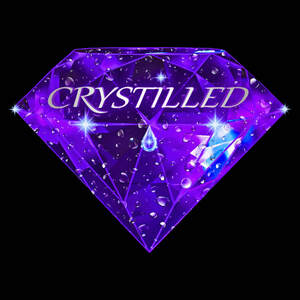
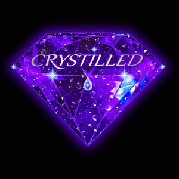

Trade Mark Journal No.2025/020 16 May 2025
UK00004140632 24 December 2024 (9,11,14,21,25,32,35,36,39,40,43)
Mark 1

Mark 2

- Class 9
- Wireless connectivity enabled devices, mobile phones, tablets, laptops, smartwatches, earphones, speakers, and home automation systems; Mobile software application designed for download and use on smartphones and tablets, specifically to enable end users to access Ai assistant; Computer software for artificial intelligence, namely, software for machine learning, deep learning, natural language processing, computer vision, and data analysis; computer hardware for supporting artificial intelligence applications; downloadable software applications utilising artificial intelligence for data processing and predictive analytics; integrated circuits and processors for enhancing artificial intelligence capabilities in electronic devices; Audio speakers; portable speakers; wireless speakers; loudspeakers; home theatre speakers; sound systems comprising remote controls, amplifiers, speakers, and subwoofers; smart speakers with voice recognition technology; parts and accessories for the aforementioned goods, namely, speaker stands, speaker covers, and speaker cables; Crystal oscillators; Quartz crystal oscillators; Liquid crystal displays; LCD [liquid crystal display]; Liquid crystal display screens; Galena crystal detectors for use in electronics; Liquid crystal display (LCD) televisions; LCD [liquid crystal display] projectors; Color filters for liquid crystal displays; Liquid crystal protective films for smartphones; Liquid crystal display [LCD] monitors; LCD [Liquid Crystal Display] monitors; Temperature compensated crystal oscillators; Liquid crystal displays [LCDs] for home theaters; Liquid crystal protective sheets for smart phones; Galena crystals [detectors]; Quartz glass thermometers; Thin Film Transistor-Liquid Crystal Display (TFT-LCD) panels; Frequency reference crystals; Recorded programs for hand-held games with liquid crystal displays; Optical glass; Crystalline silicon solar cells; Crystalline silicon solar power cells; Quantum dots [crystalline semi-conductor materials]; Eye glass chains; Programs recorded on electronic circuits for amusement apparatus with liquid crystal screens; Optical glass filters; Single-crystal silicon wafers; Photosensitive glass; Eye glass cases; Ticket dispensers; Dosage dispensers; Cash dispensers; Reusable dispenser syringes for laboratory use; Disposable dispenser syringes for laboratory use; Coin change dispensers; Automatic teller machines [cash dispensers]; Sage dispensers, not for medical use [measuring apparatus]; Cash dispensing machines; Automatic ticket dispensing machines; Lottery ticket dispensing apparatus; UHD (Ultra High Definition) Televisions; Ultra high definition televisions; Super luminescent laser diodes; Super High Frequency [SHF] radios; Super High Frequency [SHF] radar; Super High Frequency [SHF] wireless network apparatus; Organic light emitting diodes (OLED); Ultra filtration membranes for laboratory apparatus; Super High Frequency [SHF] satellite communications apparatus; LCDs [liquid crystal displays]; HD (High Definition) televisions; OLED (Organic light emitting diode) display panels; Extremely High Frequency [EHF] radios; Extremely High Frequency [EHF] radar; Light emitting diodes (LEDs); Light diodes; Light emitting diode displays; Extremely High Frequency [EHF] wireless network apparatus; Infrared sensors; Infrared detectors; Infrared thermometers; Infrared cameras; Infrared scanners; Infrared filters; Pyroelectric infrared sensors; Infra-red thermometers; Passive infrared sensors; Infrared optical apparatus; Passive infrared detectors; Infrared detection apparatus; Active infra-red sensors; Infrared remote controllers; Infrared gun sighting apparatus; Infrared locating apparatus; Infrared remote control apparatus; Infrared devices for guiding weapons; Infrared devices for aiming weapons; Thermal imaging cameras; Laser sensors; Ultraviolet detection apparatus; Dry laser imagers; Filters for ultraviolet rays, for photography; Filters for ultraviolet rays for photography; Infrared thermometers, not for medical purposes; Optical sensors; Light Imaging Detection and Ranging [LIDAR] apparatus; Thermal imaging apparatus for night vision; Laser detectors; Ultrasonic sensors; Fingerprint imagers; Electronic sensors for measuring solar radiation; Optical emitters; Electro-optical sensors; Heat sensors; Thermal sensors [thermostats]; Dry Laser imager printers; Gamma radiation detectors; Electronical sensors for measuring solar radiation; Light Detection and Ranging [LIDAR] apparatus; X-ray fluorescence analyzers; Remote temperature sensors; Optical scanners; Microwave type intruder sensors; Light Imaging Dectection and Ranging [LIDAR] apparatus for vehicles; Optical reflectors; Optical transmitters; Laser scanning densitometers; Ultrasonic wave type intruder sensors; Microwave detectors [radar]; Optical fibre temperature probes, other than for medical use; Multispectral Fluorescence Imaging System [MFIS] for scientific use; Optical fibre sensors; Radiation sensing apparatus; Laser speed detectors; Optical lamps; Laser diodes; Optical speed sensors; Photoelectric sensors; Radio-frequency transmitter; Light detection and ranging [LIDAR] apparatus for vehicles; Heat detectors; Electric smoke sensors; Radiation detectors; Automatic solar tracking sensors; Luminescence scanners; Radar reflector apparatus; CD laser lens cleaners; Thermal imaging apparatus [other than for medical use]; Laser range finders; Light emitting diodes; X-ray spectroscopy apparatus [other than for medical use]; Radio-frequency receivers; Ultrasonic object detectors for use on vehicles; Optical beam deflectors; Optical receivers; Electric sensors; Ultraviolet filters, other than for medical use; Microwave sensing apparatus; Ultrasonic flaw detectors; Target surveillance apparatus [optical]; Ultrasonic detectors [non-medical]; Radio-frequency filters; Radio-frequency transmitters; Respirators for filtering air; Vaporizer batteries; Room thermostats; Temperature monitors [valves] for central heating radiators; Air quality sensors; Ionization apparatus not for the treatment of air or water; Air current testing apparatus; Air traffic control apparatus; Air traffic control radio equipment; Ventilation suits; Respirators, other than for artificial respiration; Ballasts for halogen lamps; Ballasts for halogen lights; Ballasts for gas discharge lamps; Fluorescent lamp ballast for electric lights; Fluorescent lamp ballasts; Social software; Media content; Media software; Communication, networking and social networking software; Digital storage media; Personal media players; Computer software platforms for social networking; Media players; Digital recording media; Media streaming software; Downloadable educational media; Media and publishing software; Application software for social networking services via internet; Digital media streaming devices; Media development software; Electronic storage media; Covers for digital media players; Recorded media; Cases for digital media players; Optical media players; Digital data recording media; Optical data media; Data media (Optical -); Devices for streaming media content over local wireless networks; Blank digital storage media; Magnetic data media; Data media (Magnetic -); Media server software; Computer application software for streaming audio-visual media content via the internet; Data storage media; Computer software for the display of digital media; Optical recording media; Portable media players; Electronic data storage media; Handheld media players; Computer software to enable the provision of electronic media via communications networks; Blank digital recording media; Magnetic media registers; Electronic publications recorded on computer media; Photographic media [films, exposed]; Data storage devices and media; Optical data storage media; Optical data recording media; Machine readable media; Downloadable mobile coupons; Software for pay per click optimisation; Health monitoring software; Fireproof clothing; Bullet-proof clothing; USB adapters; USB modems; USB wireless routers; Webcams; USB flash drives with micro USB connectors compatible with mobile phones; VR goggles; USB chargers; UV filters for digital cameras; USB hardware; USB Dongles [Wireless network adapters]; PDAs; USB operating software; Universal serial bus [USB] dongle [Wireless network adapters]; VCDs; USB cables; Ethernet adapters; Universal serial bus (USB) devices; USB flash drives; Closed circuit TV [CCTV] software; Luminous USB cables; USB sticks; USB hubs; TV cameras; CB radios; USB [universal serial bus] operating software; Dewing sensors; USB cables for cellphones; Hand-held 3D scanners; USB chargers for electronic cigarettes; Multifunction printers [MFP]; CAM software; CAE software; USB port cards; Anti-dust plugs for charger ports; Blank USB flash drives; Ethernet transceivers; Firmware and device drivers; USB readers; Flash lamps for cameras; CD ROMs; Flash lamps [for cameras]; Ethernet repeaters; USB web keys; GPS software; Ethernet switches; LCD monitors; DVD micro systems; CD rom drives; Mobile High-Definition Link (MHL) cables; Universal serial bus [USB] drives; IP (Internet Protocol) televisions; LCD projectors; TV monitors; Ethernet controllers; PC mice; Quantum dot light-emitting diodes [QLED]; Software as a medical device [SaMD], downloadable; Internet of Things [IoT] sensors; Ethernet hardware; Motion-activated cameras; FM transmitters; Organic light-emitting diodes [OLED]; Oscillation sensor devices; Digital single-lens reflex (DSLR) cameras; Electric flasher switches; Optical Barcode Recognition [OBR] software; Display serial interfaces [DSI]; System on a Chip [SoC]; System on Chip [SOC]; Blank USB cards; GPS transmitters; Flash lamps for smartphones; Adapter plugs; Anti-dust plugs for earphone jacks; Signal cables for IT, AV and telecommunication; Wireless portable printers for use with laptops and mobile devices; USB card readers; Plugin software; Device drivers; CD burners; USB chargers adapted for car cigarette lighter sockets; Zener diodes; PC boards; Flashlamps for cameras; Internet of Things [IoT] range extenders [antennas]; Voltage monitor modules; Gyro sensors using GPS functions; Camera lens adapters; Stroboscopic lamps [warning beacons]; Smartphones in the shape of a watch; Smart watches; Personal digital assistants in the shape of a watch ; Video monitors; Video streaming devices; Video screens; Video films; Time measuring instruments (not including clocks and watches); Video monitor controllers; Wearable video display monitors; Video baby monitors; Video display screens; Video cameras; Mousepads; Software for use in advertising; Electronic advertising displays; Advertising signboards [mechanical]; Mobile application software; Application software for mobile phones; Application software for mobile devices; Computer application software for mobile phones; Mobile apps; Computer application software for mobile telephones; Mobile software; Downloadable mobile applications; Educational mobile applications; Software applications for mobile devices; Software and applications for mobile devices; Downloadable software applications for mobile phones; Software applications for use with mobile devices; Software for mobile phones; Downloadable software in the nature of a mobile application; Downloadable applications for use with mobile devices; Downloadable applications for mobile devices; Downloadable mobile applications for booking taxis; Mobile phones; Computer software for mobile applications that enable interaction and interface between vehicles and mobile devices; Mobile computers; Computer software for mobile phones; Downloadable mobile applications for use with wearable computer devices; Software for mobile device management; Mobile device management software; Application software for smart phones; Downloadable mobile applications for the management of data; Electronic game software for mobile phones; Mobile phone cases; Downloadable mobile applications for the management of information; Computer game software for use on mobile and cellular phones; Downloadable smart phone application software; Application software for wireless devices; Downloadable software in the nature of a mobile application for playing games; Mobile telephones; Downloadable ringtones for mobile phones; Mobile phone chargers; Downloadable mobile applications for the transmission of data; Mobile radios; Braille mobile phones; Mobile phone docking stations; Downloadable emoticons for mobile phones; Downloadable application software for smart phones; Downloadable mobile applications for the transmission of information; Mobile telecommunications handsets; Mobile communication terminals; Displays for mobile phones; Application software for smart TV; Mobile phone connectors for vehicles; Computer game software for use on mobile devices; Mobile or portable fax machines; Mobile phone covers; Mobile phone speakers; Mobile phone straps; Web application software; Downloadable graphics for mobile phones; Earphones for use with mobile telecommunication devices; Downloadable smart phone applications (software); Mobile telecommunication apparatus; Downloadable software in the nature of a mobile application for food delivery and ordering; Computer programs and software for image processing used for mobile phones; Application software; Devices for hands-free use of mobile phones; Web application and server software; Docking stations for mobile phones; Downloadable software in the nature of a mobile application for dark kitchen delivery and ordering; Computer application software for TV; Cases for mobile phones; Display modules for mobile phones; Electric mobile digital communication devices; Augmented reality software for use in mobile devices; Application server software; Chargers for mobile phones; Application software for televisions; Downloadable emoticons for mobile telephones; Mobile data apparatus; Keyboards for mobile phones; Computer software for use as an application programming interface (API); Smartphone software applications, downloadable; Batteries for use with mobile telecommunication devices; Straps for mobile phones; Downloadable graphics for mobile telephones; Computer application software; Downloadable computer software for use as an application programming interface (API); Fast chargers for mobile devices; Wireless headsets for mobile phones; Enterprise application software [EAS]; Batteries for mobile phones; Mobile telecommunications apparatus; Mobile telephone cases; Cases adapted for mobile phones; Holders adapted for mobile phones; Carriers adapted for mobile phones; Business application software; Mobile telephones for use in vehicles; Dashboard mounts for mobile phones; Mobile phone battery chargers; Mobile phone screen protectors; Application software for robot; Local mobile telephone systems; Insulated bottles [flasks] for laboratory use; Laptop sleeves; Cases for PDAs; Cases for smartphones; Cases for diskettes; Eyeglass cases; Cases (Eyeglass -); Cases for eyeglasses; Cases for spectacles; Cases for telephones; Cases for headphones; Sunglass cases; Eyewear cases; Cases for eyewear; Cases for sunglasses; Glasses cases; Cases for loudspeakers; Battery cases; Laptop cases; Camcorder cases; Cases for pince-nez; Cases (Pince-nez -); Pince-nez cases; Lens cases; Phone cases; Computer cases; Spectacle cases; Camera cases; CD cases; DVD cases; Protective cases for laptops; Protective cases for smartphones; Leather cases for smartphones; Boxes [cases] for sunglasses; Carrying cases for radios; Boxes [cases] for glasses; Cases adapted for cameras; Cases adapted for computers; Computer carrying cases; Waterproof cases for smartphones; Beeper carrying cases; Laptop carrying cases; Keyboard cases for smartphones; Cable harnesses; Electric wiring harnesses; Electric wire harnesses for automobiles; Power wires; Power cables; Power adaptors; Electrical power adaptors; Power adapters; Underwater power cables; Plug connectors; Mounting cords [electrical]; Wire connectors [electricity]; Power modules; Plug connections [electric]; Adapter connectors (Electric -); Power adapters for use in vehicle lighter sockets; High tension connectors for spark plugs; Electric plug adapters; Electric wiring; Electric wires and cables; Electric cables and wires; Outdoor power relays; Metal alloys (Wires of -) [fuse wire]; Wires of metal alloys [fuse wire]; Connecting plugs (Electric -); Water meters; Measuring cups; Polyethylene measuring cups; Measuring spoons; Microwave tubes; Heating meters; Electrical ducts; Electrical controls for irrigation sprinkler systems; Mechanical room thermostats; Electrical engineering software; Electrical wiring installations; Electrical transformers; Light sensors; Electromagnetic coils; Coils (Electromagnetic -); Electric voltage transformers; Voltage transformers; Inductor coils; Capacitive voltage transformers; Inductance capacitance filters; Electrical inductors; Voltage detectors; Voltage converters; Electrical resistance coils; Electrical voltage tester pens; Electrical coils; Inductors [electricity]; Electric resistance coils; Magnetic coils; Voltage meters; Selenium voltage surge protectors; Voltage limiters; Impedance transformers; Resistances, electric; Electric resistances; Magnetic flux sensors; High voltage transformers; Static voltage regulators; Electrical resistors; Inductive resistors; Coils, electric; Electric coils; Electric resistors; Electric current transformers; Electric current rectifiers; Voltage testers; Voltage spike suppressors; Magnetic wires; Induction voltage regulators; High voltage capacitors; Voltmeters; Electric circuit interrupters; Electrical frequency converters; Electrical rectifiers; Speed reducers [electrical]; Electronic frequency converters for high velocity electro motors; Electric diodes; Electrical resistance wire; Resistance oscillator thermometers; Galvanic batteries; Electrical capacitors; Alternator rectifiers; Electrical transducers; Electromagnetic relays; Voltage regulators for electric power; Flyback transformers; Electrical signal attenuators; Voltage surge suppressors; Voltage dividers; Wattmeters; PH electrodes; Voltage stablilzers; Electric capacitors; Electrical amplifiers; Electric rectifiers; Magnetic resistance sensors; Voltage-to-current converters; Coils (Choking -) [impedance]; Choking coils [impedance]; Electrical armatures; Electromagnetic measuring detectors; Inductors; Photovoltaic apparatus for converting solar radiation to electrical energy; Galvanic cells; Voltage regulators; Electric transformers; Electric circuit closers; Ohmmeters; Voltage surge protectors; Protectors (Voltage surge -); Magnetic telephone wires; Ammeters; Electric battery chargers; Electrical converters; Volt sticks [electrical protection devices]; Electromagnetic switches; High voltage multipliers; Thermocouple wires; Electric convertors; Torque transducers; Magnetic encoders; Encoders (Magnetic -); Electronic inductors; Electric resistors [for telecommunication apparatus]; Electric resistors for telecommunication apparatus; Magnetic object detectors; Electrical reducing transformers; Electromagnets; Voltage stabilizers; Planar triodes; Reducers [electricity]; Magnetic detectors; Electrical wires; Electric current meters; Wires, electric; Electric circuit testers; Electric wires; Electric circuits; Electrical circuit testers; Capacitance meters; Electrical limiters; Electric current sensors; Voltage stabilisers; Frequency converter for actuators; Converters, electric; Electric converters; Frequency invertors [electronic]; Electrical circuits; Heat resistant electric wires; Lighting dimmers; Lighting ballasts; Lighting (Batteries for -); Batteries for lighting; Photocells for use with security lighting; Ballasts for electrical lighting fittings; Stage lighting controls; Electronic ballasts for lighting purposes; Lighting control panels; Photographic darkroom lighting; Weekly publications downloaded in electronic form from the internet; Downloadable email software; Content access software; Downloadable electronic newsletters; Downloadable publications; Electronic and magnetic ID cards for use in connection with payment for services; Payment software; Tools [software] for pay per click optimisation; Magnetic data recording media; Retail software; Search marketing software; Distribution transformers; Distribution boxes; Distribution amplifiers; Distribution boards; Distribution boxes [electricity]; Electricity distribution boxes; Electrical distribution boxes; Distribution consoles [electricity]; Distribution boards [electricity]; Electricity distribution boards; Distribution boxes for electrical power; Panels for the distribution of electricity; Electrical power distribution blocks; Electric power distribution apparatus; Electronic audio/video signal distribution systems; Distribution panel boards [electricity]; Electric power distribution machines; Apparatus and instruments for controlling the distribution of electricity; Apparatus and instruments for switching the distribution of electricity; Mains distribution panels (Electric -); Apparatus and instruments for accumulating the distribution of electricity; Apparatus and instruments for regulating the distribution of electricity; Apparatus and instruments for transforming the distribution of electricity; Apparatus and instruments for conducting the distribution of electricity; Power distributing boxes; Software for Digital Distributed Storage; Piezoelectric sensors; Piezoelectric igniters; Piezoelectric switches; Piezoelectric vibratory gyroscopes; Electro-optic transducers; Ultrasonic transducers; Piezoelectrical transducers; Transducers; Electroacoustic transducers; Polymer light-emitting diodes; Linear transducers; Ceramic resonators; Electric actuators; Electric linear actuators; Linear actuators [electric]; Transducer energisers; Transducer apparatus; Force transducers; Pressure transducers; Ceramic capacitors; Optical semiconductor amplifiers; Acoustic coupling devices; Magnetic sensors; Electric oscillators; Nonlinear optical fibers; Coaxial resonators; Waveguides (Electronic -); Nonlinear optical fibres; Monolithic ceramic capacitors; Optical waveguides; Measuring transducers; Silicon carbide diodes; Optical semiconductors; Electrical sensors; Electro-optical couplers; Electronic resonators; Thermomagnetic cut-out devices; Organic light-emitting diodes; Vibration sensors; Ultrasonic thickness gauges; Coupling capacitors; Electric capacitors [for telecommunication apparatus]; Electric capacitors for telecommunication apparatus; Electrochemical gas sensors; Organic light-emitting diode televisions; Optical frequency metrology devices; Polarization-maintaining optical fibers; Waveguides; Superconductive magnet apparatus; Graphite electrodes; Electrodes; Semiconductor devices; Force sensing resistors; Recording substrates [magnetic]; Magnetic filaments; Electronic pressure sensors; Zone plate antennas; Gloves for industrial purposes for protection against injury; Automatic security barriers; Area Access Control [AAC] safety light curtains; Line throwers for safety and rescue purposes; Safety clothing for protection against accident or injury; Separation columns for measuring purposes; Remote entry point control apparatus; Safety gloves for protection against accident or injury; Safety footwear for protection against accident or injury; Separation columns for scientific purposes; Safety markers; Perimeter Access Control [PAC] safety light curtains; Lanyards for safety purposes for fall protection; Safety boots for use in industry [for protection against accident or injury]; Armbands [luminous] for protection against accident or injury; Clothing for protection against biological hazards; Thermal protective aids [clothing] for protection against accident or injury; Footwear for protection against biological hazards; Airbags for safety purposes for fall protection; Protective work clothing [for protection against accident or injury]; Water level detection apparatus; Footwear for protection against accidents, irradiation and fire; Gloves for protection against injury; Footwear for protection against irradiation; Insulated clothing for protection against accident or injury; Gloves for protection against accidents, irradiation and fire; Clothes for protection against injury; Face-shields for protection against accidents, irradiation and fire; Shoes for protection against accidents, irradiation and fire; Headgear for protection against injury; Clothing for protection against accidents, irradiation and fire; Headgear for protection against accident; Heat sensing identification indicators; Footwear for protection against fire; Nets for protection against accidents; Socks for protection against accidents, irradiation and fire; Gloves for protection against X-rays for industrial purposes; Face guards for protection against accident or injury; Boots for protection against accidents, irradiation and fire; Thermal suits for protection against accident or injury; Balaclavas for protection against accidents, irradiation and fire; Asbestos clothing for protection against fire; Access control installations (Automatic -); Clothing for protection against fire; Fire (Clothing for protection against -); Separation columns for weighing purposes; Clothing for protection against radiation; Garments for protection against fire; Safety apparatus [for the prevention of accident or injury]; Rods for water diviners.
- Class 11
- Water dispensers, electric water coolers, refrigerated drinking water dispensers, and hot and cold water dispensing machines. Water Dispenser Filters; Reverse Osmosis mineral filters and VOC filters; apparatus and devices for water purification and filtration; components for water purification, namely, Reverse Osmosis mineral filters designed to remove impurities and enhance water quality by adding essential minerals, and VOC filters specifically engineered to eliminate volatile organic compounds from water sources; filters for use in domestic, commercial, and industrial water treatment systems; Air Purifiers; Air purifiers designed to enhance indoor air quality by removing contaminants, allergens, and pollutants from the air; HEPA filters, activated carbon filters, and UV-C light technology; Air Purifier Filters; Ultra Violet C (UVC) Sterilisers; UVC water and air sterilisers; Infrared Lighting & Heating; lighting and heating equipment, infrared heat lamps, panels, and integrated lighting systems, Humidifiers; Dehumidifiers; Air Conditioners; Air conditioning units; apparatus for air cooling; electric air deodorizers; air purifiers; HVAC systems (heating, ventilation, and air conditioning); portable air conditioners; window-mounted air conditioning units; split system air conditioners; ductless air conditioners; central air conditioning systems; heat pumps; air conditioning installations; air conditioning apparatus; air conditioning fans; air conditioning filters; parts and fittings for air conditioning units.; Natural Oil Diffusers; HVAC Systems; Heating, Ventilation, and Air Conditioning (HVAC) Systems, air conditioning apparatus, heating installations, ventilation units, and climate control devices for residential, commercial, and industrial use; parts and fittings; Ventilation apparatus and installations, namely, mechanical ventilation systems for residential and commercial buildings, air conditioning fans, air purifiers, ventilators, and exhaust fans; components and accessories thereof, including ducts, filters, grills, and diffusers.; Water and Air Purification Apparatus and Equipment; water and air purification systems; water and air quality for personal, residential, and commercial use; charitable initiatives, including funding the construction of water banks, drinking wells and air pollution reduction in regions afflicted by water scarcity, polluted air and poverty; water banks, drinking wells and air pollution reduction in regions afflicted by water scarcity, polluted air and poverty. These efforts aim to improve access to safe drinking water, clean breathable air and contribute to the well-being of communities in need; Bottle warmers; Bottle heaters; Baby bottle warmers; Feeding bottle heaters; Babies' bottle warmers; Bottle coolers [apparatus]; Hot water bottles; Water filtration bottles sold empty; Electric bottle heaters; Electric hot-water bottles; Sterilisers for babies' feeding bottles; Electric warmers for feeding bottles; Water fountains; Water cisterns; Water control valves for water cisterns; Water coolers; Water filtration jugs; Water faucets; Water heaters; Water purifying units for producing potable water; Water softeners; Water purifiers; Water ionizers; Water dispensers; Water treatment apparatus for water purification; Water taps; Water sterilisers; Water treatment units for aerating and circulating water; Water purification tanks; Water boilers; Hydrants for water supply; Filters for drinking water; Drinking water filters; Water chillers; Water treatment apparatus for water softening; Heaters for wash basin water; Pressurised water reservoirs; Water sterilizers; Water taps being parts of water supply installations; Heaters for bath water; Heaters for sink water; Sea water desalination plants; Pressure water tanks; Tap water faucets; Water immersion heaters; Water filters; Installations for cooling drinking water; Taps for water supply; Non-electric hot water bottles; Hot water supply heaters; Water heaters for showers; Drinking water supply installations; Hot water heaters; Water desalination plants; Drinking water supply apparatus; Gas water heaters; Refrigerated beverage dispensers [other than vending] units; Disinfectant dispensers for toilets; Disinfectant dispensers for washrooms; Refrigerated beverage dispensing units [other than vending]; Ice dispensing apparatus; Apparatus for dispensing ice; Ice dispensing machines; Refrigerated beverage dispensing units; Room deodorant dispensing systems; Chilled purified water dispensers; Apparatus for dispensing chilled beverages; Electric dispensers for room deodorants; Air freshener dispensing systems; Refrigerated dispensing units for beverages; Toilet stool units with a washing water squirter; Ultra violet ray lamps, not for medical purposes; Fluorescent lamps with low ultra-violet light output; Compact fluorescent light bulbs; Laser light projectors; Flourescent electric light bulbs; Light shades; Organic light emitting diodes (OLED) lighting devices; Smart light bulbs; Light diffusers; Luminous tubes for lighting; Light projectors; UV halogen metal vapour lamps; Fluorescent light bulbs; Miniature light bulbs; High intensity discharge luminaires; Light sources of electro luminescence; Sterilisers; Steam sterilisers; Air sterilisers; Sterilizers; Milk sterilizers; Portable steam sterilizers; Sterilizers for toothbrushes; Steam sterilizers; Sluices [sterilizers]; Sterilising appliances; Sterilisers for dental instruments; Water sterilising apparatus; Sterilisers for medical instruments; Sterilisation autoclaves; Sterilising apparatus; Sterilisers for surgical instruments; Electric heaters for baby bottles; Steam sterilizers for laboratory use; Steam sterilizers for household use; Steam sterilizers for medical use; Steam sterilizers for industrial use; UV toilet sterilizers for household purposes; Feeding bottles (Heaters, electric, for -); Heaters, electric, for feeding bottles; Sluices [sterilizers] for use in hospitals; Portable steam sterilizing apparatus; Ultraviolet sterilizers; Book sterilizers; Sterilization apparatus for feeding bottles; Domestic baby bottle warmers [electric]; Sterilizers for household use; Sterilizers for industrial use; Air sterilising apparatus; Dish sterilizers; Sterilisation autoclaves for medical use; Ultrasonic sterilizers for household purposes; Sterilizers for laboratory use; Air sterilizers; Electric sterilizers for household purposes; Sterilizers for medical use; Steam sterilizers for floors; Ultra-violet water sterilisation units for industrial use; Sterilising apparatus for medical use; Sanitisers; Electric warmers for baby wet wipes; Sterilization autoclaves; Ultra-violet water sterilisation units for domestic use; Sterilizers for medical instruments; Pressure vessels for sterilising; Electric humidifiers; Infrared illuminators; Infrared lamps; Infrared radiators; Infrared heating panels; Infrared lamp fixtures; Infrared lighting fixtures; Infrared lamps for drying the hair; Infrared drying apparatus for the hair; Security lighting incorporating an infra-red activated sensor; Infrared lamps, not for medical purposes; Ultraviolet sun ray lamps, other than for medical use; Ultra-violet irradiators; Ultraviolet lamps, other than for medical use; Combined lighting and ultraviolet apparatus; Ultraviolet ray lamps, not for medical purposes; Security lighting incorporating a heat activated sensor; Incandescent lamps for optical instruments; Ultraviolet lamps used for aquariums; Light emitting diode lights for automobiles; Thermal storage instruments [solar energy] for heating; Ultra-violet sun ray lamps for cosmetic purposes; Thermal storage apparatus [solar energy] for heating; Air purifiers; Filters for air purifiers; Electric air purifiers; Air humidifiers; Industrial air purifiers; Wearable air purifiers; Air purifiers for automobiles; Air purifiers for strollers; Air filters for air conditioning units; Air dehumidifiers; Air conditioners; Clean air cabinets (Air purification apparatus for -); Clean air booths (Air purification apparatus for -); Air filters; Filters for air conditioning; Air conditioning filters; Filters for air conditioners; Air inductor apparatus [air conditioning]; Air purifiers for household use; Separators for purifying air; Air conditioning; Air heaters; Portable air conditioners; Air purifiers [for household purposes]; Air purifying machines; Ionizers for the treatment of air; Air humidifiers for automobiles; Room air conditioners; Filters for cleaning air; Purification apparatus (Air -); Air purification apparatus; Air purifying apparatus; Apparatus for purifying air; Air purification machines; Purification machines (Air -); Electric air conditioners; Valves for air conditioners; Driers (Air -); Air driers; Evaporators for air conditioners; Ionisers for air treatment; Germicidal lamps for purifying air; Germicidal lamps for purifying the air; Air humidifying installations; Filters for use with apparatus for air conditioning; Ionising air guns for the treatment of air; Air purification installations; Air filtration installations; Filters for water purifiers; Air humidifying apparatus; Air fryers; Electrostatic air filters; Cyclones [air purifying apparatus]; Air freshener plug-ins; Electric dispensers for air fresheners; Air filter installations; Dryers (Air -); Air dryers; Robotic air purifiers for household purposes; Air impellers for ventilation; Heating, ventilating, and air conditioning and purification equipment (ambient); Extractors [ventilation or air conditioning]; Air conditioning devices; Air curtains; Compressed air ventilators; Supply air diffusers; Cyclones [air purifying machines]; Air conditioning apparatus; Air cleansing apparatus; Air cooling apparatus; Air conditioning for use in transportation; Air conditioners for automobiles; Air conditioners for vehicles; Vehicles (Air conditioners for -); Air deodorizing apparatus; Air heating furnaces; Air recirculating apparatus; Smoke purifiers; Air humidifiers [water containers for central heating radiators]; Hot air blowers; Air curtains for ventilation; Air deodorising apparatus; Air freshening apparatus; Vehicle-mounted air purifying apparatus; Air cleaning apparatus; Apparatus for cleaning air; Air purifying units for household use; Air ionization apparatus; Air conditioning installations; Installations for conditioning air; Conditioning air (Installations for -); Installations for air conditioning; Air moisturisers; Window-mounted air conditioning units; Air circulation apparatus; Dehumidifiers; De-humidifiers; Electric dehumidifiers; Electric dehumidifier for household use; Industrial dehumidifiers; Humidifiers; Dehumidifiers for household use; Dehumidifiers for household purposes; Dehumidifiers for commercial use; Industrial humidifiers; Room humidifiers [apparatus]; Humidifiers for household use; Humidifiers for central heating radiators; Air-source heat pump water heaters; Electric humidifiers for household use; HVAC systems (heating, ventilation and air conditioning); Vehicle HVAC systems (heating, ventilation and air conditioning); Portable evaporative air coolers; Installations for humidifying; Portable electric warm air dryer; Evaporative air cooling units; Extractor units [ventilation]; Fan heaters; Storage heaters; Air inductor apparatus [ventilation]; Aquarium heaters; Storage water heaters; Electric dryers for laundry use [heat drying]; Anion generating humidifiers; Bathroom heaters; Chiller units being parts of water cooling installations; Cooling evaporators; Humidifiers [for household purposes]; Refrigerant condensers; Air driers [dryers]; Appliances for water filtration [other than machines]; USB-powered humidifiers for household use; Tumblers [heat driers] for laundry use; Electrical storage heaters; Gas cleaners and purifiers; Tumblers [heat dryers] for laundry use; Cooling apparatus and appliances; Furnace boilers; Room heaters; Water purifiers for industrial use; Water coolers and heaters; Water heaters and boilers; Cooling appliances and installations; Electric clothes dryers [heat drying]; Water heaters for household use; Electrically powered air blowers for ventilation purposes; Turbine ventilators [ventilation apparatus]; Electrically powered air blowers for air-conditioning purposes; Electrostatic precipitators for cleaning air; Suction ventilators; Cooling tanks for furnaces; Convection heaters; Refrigerated compressed air dryers; Humidifiers [other than for medical use]; Radiator heaters; Ventilation [air-conditioning] installations and apparatus; Humidifiers for musical instruments; Humidifying apparatus, other than for medical use; Humidification apparatus for use with air conditioning apparatus; Room humidifiers that contain water and are placed on central heating radiators; Aquarium filtration apparatus; Water bed heaters; Air valves for steam heating installations; Warm air heating apparatus; Vacuum steam heating apparatus; Electrostatic filters for water filtration; Electric water purifiers for household purposes; Temperature sensing apparatus [thermostatic valves] for central heating radiators; Chambered lid furnace; Filters for use with apparatus heating; Air treatment equipment; Air conditioning apparatus for ships; Window air conditioning apparatus; Impellers [parts of air conditioning apparatus]; Fans for air conditioning apparatus; Central type air conditioning apparatus; Domestic air conditioning apparatus; Air conditioning fans; Fans for use in air conditioning; Air heat recovery apparatus; Hoods for air conditioning apparatus; Hot air apparatus; Air drying apparatus; Ionization apparatus for the treatment of air or water; Air or water (Ionization apparatus for the treatment of -); Ionization apparatus for the treatment of air; Cold air blowing apparatus; Air freezing apparatus; Mobile air conditioning apparatus; Air heating apparatus; Air conditioning apparatus for industrial use; Air conditioning apparatus for commercial use; Air handlers; Ionisation apparatus for the treatment of air; Air separation apparatus; Air control dampers; Central air conditioning installations; Air conditioning installations for vehicles; Air conditioning installations for cars; Ventilation hoods; Ventilation apparatus; Ventilation terminals; Ventilation hoods for stoves; Ventilation hoods for laboratories; Motorised fans for ventilation; Electric fans for ventilation; Industrial ventilation apparatus; Ventilation [air-conditioning] installations for vehicles; Ventilation installations for kitchens; Ventilating hoods for smoke; Ventilating hoods for steam; Ventilation grilles being parts of extractor fans; Ventilating units; Dampers for ventilating installations; Solar powered ventilation apparatus; Installations for ventilating; Ventilating installations; Hoods for ventilating apparatus; Flues for ventilating apparatus; Electrically powered blowers for ventilation; Ventilating hoods for laboratories; Ventilating exhaust fans; Apparatus for ventilating; Ventilating apparatus; Ventilating fans; Fans for ventilating; Electrically powered fans for ventilation purposes; Ventilators for heat exchangers; Heat sinks for use in ventilating apparatus; Oven ventilator hoods; Electrical fans being parts of household ventilation installations; Fire ventilators for exhausting gases; Lighting louvres; Apparatus and installations for ventilating; Filters for use with apparatus for ventilating; Ventilating fans for industrial use; Fire ventilators for exhausting fumes; Fire ventilators for exhausting vapours; Residential ventilating units; Aeolian ventilators; Installations for the cooling of air; Air inlets [vents] for vehicles; Fire ventilators for exhausting smoke; Recuperators for pre-heating combustion air in heating systems by the use of hot flue gas; Ventilating apparatus for vehicles; Ventilating fans for industrial purposes; Ventilating fans for use in vehicles; Electro ventilators; Vapour extraction hoods for fireplaces; Air conditioning panels for use in walk-in coolers; Heat exchangers for the removal of flue gases; Ventilating fans for household use; Ventilating fans for commercial use; Heat exchangers for the removal of exhaust gases; Louvres for light control; Diffusers (Light -); Linear air diffusers; Diffusers being parts of lighting apparatus; Diffusers being parts of lighting installations; Reflector lamps; Lamp reflectors; Reflectors (Lamp -); Reflectors for lamps; Adjustable coated baffle grease filters [parts of cooker hoods]; Tail lamp bulbs; Filters for use with lamps; Halogen lamps; Glass covers being fittings for lamps for sun lamps; Candle lamps; Mirror balls being lighting fittings; Filters for air extractor hoods; Air extractor hoods (Filters for -); Halogen light bulb; Lamp fittings; Vacuum lamps; Dashboard lamp bulbs; Fixed acetylene air suction burners; Light bulbs for gas-discharge lamps; Louvres for lights; Portable lamps [for illumination]; Lighting and lighting reflectors; Counterweight fittings for pendant lamps; Lamp bulbs; Flameless light-emitting diode candles; Lighting lamps; Louvres for light deflection; Xenon arc lamps; Oil lamps; Illuminant lamps for projectors; Sliding plate smoke dampers; Scented electric candles; Flange light fittings; Glass covers for lamps; Filters for use with lighting apparatus; Filters for lighting apparatus; Fresnel lanterns; Electric lamp bulbs; Halogen light bulbs; Lighting tubes; Filaments (Magnesium -) for lighting; Magnesium filaments for lighting; Vehicle lighting and lighting reflectors; Reflectors for light deflection; Reflectors adapted for lighting apparatus; Lighting apparatus incorporating optical fibers; Light reflectors; Lamp fitments; Portable hand lamps [for illumination]; Lights for gas-discharge lamps; Light Emitting Diode lighting fixtures; Vapour extractor hoods for cookers; Burners for lamps; Lamps (Burners for -); Projector lamps; Portable solder fume absorbers; Germicidal lamps; Fibre optic lighting fixtures; Handwarmers [other than clothing]; Chandelier pendants; Portable search lamps; Strobe lights for discos; Stroboscopic lamps for discos; Germicidal burners; Burners (Germicidal -); Solar powered lamps; Lightsticks, battery-operated; Anti-dazzle devices for vehicles [lamp fittings]; Gas water heaters [for household use]; Water supply apparatus; Apparatus for water supply; Water purifiers for industry; Water softening units; Water treatment apparatus for water softening for domestic use; Installations for water supply; Water supply installations; Gas water heaters for household use; Water purification units; Pressure tanks [water]; Waste water purification units; Electric water heaters; Wastewater treatment installations; Sewage treatment plants; Bioreactors for use in the treatment of wastewater; Electrically-heated mugs; Electric mug warmers; Electrically heated mugs; Electric coffee pots; Refillable coffee capsules; Refillable tea capsules; Tea urns (Electric -); Tea kettles [electric]; Tea kettles, electric; Electric tea makers; Tea makers [electric]; Tea warmers (Electric -); Coffee roasters; Roasters (Coffee -); Expresso coffee machines; Coffee machines; Coffee makers; Coffee capsules, empty, for electric coffee machines; Coffee bean roasting machines; Electric coffee roasters; Coffee roasting machines; Electric coffee percolators; Coffee percolators, electric; Percolators (Coffee -), electric; Electric coffee brewers; Coffee brewers, electric; Coffee brewers (Electric -); Electric coffee urns; Coffee makers, electric; Electric coffee makers; Coffee roasting ovens; Electrical coffee pots; Electric coffee filters; Coffee filters, electric; Filters (Coffee -), electric; Coffee machines, electric; Electric coffee machines; Domestic coffee percolators [electric]; Heated cabinets for use in the food service industry; Commercial catering fryers; Mobile [portable] sanitary installations; Fitted fabric covers for hot water bottles; Refrigerating show cases; Refrigerated display cases; Heated display cases; Drinking water (Filters for -); USB-powered cup heaters; Water faucet spout; Water shower apparatus; Water softeners [apparatus]; Hot water apparatus; Washers for water faucets; Water heaters [apparatus]; Water cooling apparatus; Water filtration apparatus; Water intake apparatus; Filters for use with apparatus for water supply; Apparatus for descaling water; Purification machines (Water -); Water purification machines; Washers for water taps; Water purification apparatus; Apparatus for water purification; Filter boxes for water purification; Water desalinating apparatus; Toilet bowls with integrated bidet water jets; Water outlets [faucets]; Water disinfection apparatus; Apparatus for waste water purification; Apparatus for decalcifying water; Mixer faucets for water pipes; Flushing apparatus for water closets; Water control valves for faucets; Filter elements for the air vents of water supply tanks; Cooker hobs; Microwave cookers; Air sterilizers for household purposes; Electric autoclaves; Radiators [heating]; Heating boilers; Stoves for heating; Central heating radiators; Central heating boilers; Gas boilers for central heating; Appliances for heating; Coils for heating; Dampers [heating]; Furnaces for central heating; Underfloor heating apparatus; Gas boilers for water heating; Electric central heating boiler systems; Underfloor heating installations; Apparatus for heating; Heating apparatus; Thermal radiators for the heating of buildings; Heaters for heating irons; Solar heating apparatus; Installations for heating; Heating installations; Boilers for use in heating systems; Stoves [heating apparatus]; Heating installations for gas; Heating units; Heating elements; Elements (Heating -); Flues for heating boilers; Electric radiators for heating buildings; Electric heating installations; Electric heating elements; Pipes for heating boilers; Heating apparatus, electric; Electric heating apparatus; Radiators for central heating installations; Electric heating filaments; Heat sinks for use in heating apparatus; Heating filaments, electric; Filaments, electric (Heating -); Heating armatures; Heating apparatus for furnaces; Boilers for heating installations; Electric radiant heating apparatus; Steam radiators for heating buildings; Radiators for central heating systems; Heating apparatus for oil; Boilers for central heating installations; Heating installations [water]; Water heating installations; Electric water heating apparatus; Flues for heating apparatus; Electrical heating elements; Hot water heating apparatus; Heat exchangers for central heating purposes; Steam heating apparatus; Heating installations (Hot water -); Hot water heating installations; Industrial heating furnaces; Heating plates; Hot air heating apparatus; Heating rods; Underfloor heating apparatus and installations; Fixed heating burners; Feeding apparatus for heating boilers; Air heating installations; Automatic temperature regulators for central heating radiators; Solar heating installations; Electric trace heating; Installations for central heating; Central heating installations; Cylinders for the heating of water; Heating rings; Electric heating fans; Apparatus for heating milk; Saunas (Apparatus for heating -); Burners for heating installations; Solar thermal collectors [heating]; Gas fuelled central heating installations; Electric heating cables; Thermal controls [valves] for central heating radiators; Heating apparatus for use in the home; Flat radiators for central heating installations; Heating installations for fluids; Central heating apparatus; Heating and cooling apparatus for dispensing hot and cold beverages; Gas fired heating apparatus; Temperature sensors [thermostatic valves] for central heating radiators; Temperature limiters [valves] for central heating radiators; Heating cartridges; Gas fired heating installations; Solar heating panels; Solar panels for use in heating; Solar collectors for heating; Gas boilers for the heating of swimming pools; Apparatus for controlling temperature in central heating radiators [valves]; Temperature controlling apparatus [valves] for central heating radiators; Temperature regulators [thermostatic valves] for central heating radiators; Coils [parts of distilling, heating or cooling installations]; Installations for heating foodstuffs; Appliances for heating beverages; Temperature control apparatus [valves] for central heating radiators; Thermoelectric apparatus for heating beverages; Temperature controllers [valves] for central heating radiators; Thermoelectric apparatus for heating foodstuffs; Electric surface heating tapes; Appliances for heating foodstuffs; Flat heating elements; Heating apparatus for foodstuffs; Industrial heating apparatus; Gas fired back boiler units for domestic central heating; Apparatus for heating foodstuffs; Water distributor armatures for heating; Floor heating apparatus; Heating apparatus incorporating flues; Control valves (Thermostatic -) for central heating radiators; Electrical boilers; Residential air conditioning units; Control units [thermostatic valves] for heating installations; Residential heating units; Cooled panels for use with electrical furnaces; Industrial heating installations; Heating furnaces for industrial use; Valves (Thermostatic -) [parts of heating installations]; Thermostatic valves [parts of heating installations]; Thermostatic valves as parts of heating installations; Vent covers [parts of air conditioning installations]; Industrial heaters; Tub control valves [plumbing fittings]; Heating and cooling systems for motor cars; Heating furnaces [for industrial purposes]; Control devices [thermostatic valves] for heating installations; Manually-operated plumbing valves; Tubes (Luminous -) for lighting; Heating apparatus for aquariums; Water heaters for shower baths; Refrigerating appliances; Lighting; Lighting fixtures; Bulbs for lighting; Lanterns for lighting; Lighting tracks [lighting apparatus]; Lamps for security lighting; Torches for lighting; Lighting fittings; Luminaires for outdoor lighting; Incandescent lighting fixtures; Outdoor lighting; Electrical lamps for outdoor lighting; Electrical lamps for indoor lighting; Lighting installations; Installations for lighting; Decorative lighting; Electric lighting; Fluorescent luminaires for stage lighting; Fluorescent luminaires for architectural lighting; Sconce lighting fixtures; Electrical lighting fixtures; Halogen architectural lighting fixtures; Electric lighting fixtures; Halogen stage lighting fixtures; Lamps for lighting purposes; Arc lamps [lighting fixtures]; Indoor fluorescent lighting fixtures; Outdoor lighting fittings; Architectural lighting fixtures; Lamps for vehicle lighting; Plasma Lighting System [PLS] lighting; Emergency lighting; Outdoor electrical lighting fixtures; Lighting armatures; Industrial lighting fixtures; Display lighting; Indoor electrical lighting fixtures; Lighting elements; Lighting panels; Electric torches for lighting; Pendant fluorescent lighting fixtures; Lighting transformers; Security lighting; Lighting for aquariums; Indoor fluorescent electrical lighting fittings; Garden lighting; Residential lighting fixtures; Lighting apparatus; Apparatus for lighting; Installations for electric lighting; Electric lighting installations; Commercial lighting fixtures; LED lighting fixtures; Lighting towers; Installations for street lighting; Decorative gas lighting; Emergency lighting installations; Lighting glasses; Lighting units; Electric indoor lighting installations; Fluorescent lighting apparatus; Lighting for ponds; Decorative lighting sets; Filters for lighting appliances; Electrical discharge lighting fixtures; Filters for stage lighting; Lighting ornaments [fittings]; Reflectors for wide area lighting fixtures; Electrical lighting fixtures for use in hazardous locations; Decorative gas lighting sets; Lighting apparatus and installations; Apparatus and installations for lighting; Vehicle lighting installations; Luminous cables for lighting purposes; HID [high-intensity discharge] architectural lighting fixtures; Electric apparatus for lighting; LED lighting installations; Electric lighting apparatus; Installations for lighting christmas trees; Fluorescent lighting tubes; Lighting fixtures for household use; Electric indoor lighting apparatus; Glow sticks for lighting; Decorative electric lighting apparatus; Strobe lights [decorative]; Lights for incandescent lamps; Emergency lighting apparatus; Strobe lights [light effects]; Lighting installations for vehicles; Stage lighting apparatus; LED [light-emitting diode] lighting fixtures; Color filters for lighting apparatus; Lighting fixtures for commercial use; Fiber optic lighting fixtures; Film stage lighting installations; Lighting being for use with security systems; Neon lamps for illumination; HID [high-intensity discharge] stage lighting fixtures; Decorative lighting for christmas trees; Water distribution installations; Apparatus for the distribution of water; Air distribution units; Appliances for water distribution [automatic]; Filters for sanitary water distribution apparatus; Air purgers for use with water distribution installations; Automatic ion exchange chromatography apparatus for industrial use; Automatic chromatography apparatus for industrial use; Columns for physical separation of fractions; Diffusion furnaces for industrial use; Sprinkler installations [automatic] for agricultural purposes; Sprinkler installations [automatic] for horticultural purposes; Level control valves; Chromatography apparatus for industrial purposes; Sprinklers [automatic] for surface installation; Pressure relief valves [safety apparatus] for water apparatus; Solar water heaters; Ionic water generators; Gravimetric dry flow feeders for water treatment; Instantaneous water heaters; Hot water boilers; Strainers for water lines; Circulators [water heaters].
- Class 14
- Crystals; Crystals, namely, polished, semi-polished, and raw natural crystals; semi-precious stones and gemstones for use in jewelry; crystal healing stones for metaphysical and holistic purposes; crystal accessories including pendants, bracelets, and earrings; collectible crystals and mineral specimens; Amethyst; Amethyst Crystal; Cirtine; Citrine Crystal; Quartz; Quartz Crystal; Crystals; Crystal Stones; Natural Crystal Stones; Artificial Crystal Stones; Jewellery made of crystal; Jewellery made of crystal coated with precious metals; Watch crystals; Sapphire; Olivine [gems]; Spinel [precious stones]; Jewellery made of glass; Olivine [peridot]; Tourmaline gemstones; Quartz clocks; Agate as jewellery; Jewellery of yellow amber; Jewelry of yellow amber; Emerald; Commemorative statuary cups made of precious metal; Commemorative statuary cups of precious metal; Cases for jewels; Jewel cases; Cases for watches; Jewelry cases; Jewellery cases; Watch cases; Clock cases; Cases [fitted] for jewels; Jewel cases [fitted]; Cases for watches [presentation]; Cases for horological instruments; Cases [fitted] for horological articles; Jewellery cases [caskets]; Cases [fitted] for watches; Wristbands [charity]; Charity bracelets; Bracelets [charity]; Wrist bands [charity]; Prize cups of precious metal; Prize cups of precious metals; Prize cups made of precious metal.
- Class 21
- Glass bottles; stainless steel bottles; bottles; water bottles; Baby bottles; Reuseable Water Bottles; Bottles; Bottle pourers; Bottle coolers; bottle cradles; Bottle openers; Bottle buckets; Glass bottles; Perfume bottles; Bottle brushes; Bottle cradles; Water bottles; Drinking bottles; Squeeze bottle [empty]; Glass stoppers for bottles; Feeding bottle brushes; Bottle stands; Plastic bottles; Plastic water bottles; Empty spray bottles; Vacuum pumps for bottles; Reusable bottles; Bottle coolers [receptacles]; Brushes for feeding bottle teats; Plastic water bottles [empty]; Vacuum bottles; Bottle openers [hand-operated]; Perfume bottles sold empty; Siphon bottles for carbonated water; Aluminum water bottles; Squeeze bottles, empty; Soap dispensing bottles; Aluminum water bottles, empty; Non-electric bottle openers; Refrigerating bottles; Bottle cleaning brushes; Water bottles sold empty; Covers for water bottles; Wine jugs; Brushes for feeding bottles; Insulated bottles [flasks]; Reusable plastic water bottles sold empty; Biodegradable bottles; Cleaning brushes for feeding bottle teats; Dispensers for liquids for use with bottles; Biobased bottles; Bottle openers incorporating knives; Shaker bottles sold empty; Empty water bottles for bicycles; Siphon bottles for aerated water; drip collars specially adapted for use around the top of bottles to stop drips; Drinking bottles for sports; Water bottles for bicycles; Wine decanters; Stands for bottles; Sports bottles [empty]; Drip preventers for bottles; Reusable stainless steel water bottles; Reusable stainless steel water bottles sold empty; Smart medicine bottles, empty; Vacuum bottles [insulated flasks]; Bottles, sold empty; Water troughs; Water flossers; Siphons for sparkling water; Siphons for carbonated water; Siphons for aerated water; Crystal [glassware]; Crystal ornaments; Figurines of crystal; Statues of crystal; Sculptures of crystal; Statuettes of crystal; Busts of crystal; Figurines made of crystal; Ornaments made of crystal; Hand cut crystal glassware; Figurines made of lead crystal; Opal glass; Works of art made of crystal; Opaline glass; Glass powder; Glass decanters; Ornamental glass spheres; Decorative glass spheres; Fused quartz; Glass vases; Semi-worked glass beads; Porous glass; Polished plate glass; Unwrought glass; Figurines of glass; Glass tableware; Glass ornaments; Candlesticks of glass; Glass candlesticks; Enamelled glass; Glass bowls; Glass caps; Statues of glass; Ornamental glass; Spun glass; Unprocessed glass; Glass flasks; Luminous glass, not for building; Powdered glass for decoration; Soap dispensers; Shampoo dispensers; Portable beverage dispensers; Liquid soap dispensers; Dispensers for liquid soap; Napkin dispensers; Toothpaste dispensers; Serviette dispensers; Hand soap dispensers; Straw dispensers; Shower gel dispensers; Dispensers for detergents; Kitchen paper dispensers; Dispensers for cosmetics; Dispensers for the storage of toilet paper [other than fixed]; Body cleanser dispensers; Dispensers for paper wipes [other than fixed]; Dispensers for salt; Dispensers for serviettes; Paper towel dispensers; Dispensers for liquid soap [for household purposes]; Hand towel dispensers, other than fixed; Napkin dispensers for household use; Hair fixer dispensers; Dispensers for paper towels; Portable dispensers for powdered milk; Paper hand towel dispensers; Drinking straw dispensers; Soap dispensing dish brushes; Batter dispensers for kitchen use; Hand-operated batter dispensers for household use; Dispensers for paper hand towels; Cotton ball dispensers; Dental floss dispensers; Portable beverage container holders; Dispensers for cellulose wipes, for household use; Plastic containers for dispensing drink to pets; Dispensers for cling film [other than fixed]; Non electric coffee pots not of precious metal; Heaters for feeding bottles, non-electric; Non-electric heaters for feeding bottles; Feeding bottles (Heaters for -), non-electric; Non-electric warming apparatus for feeding bottles; Vacuum flask cookers; Non-electric milk frothers; Baby baths, portable; Baths (Baby -), portable; Portable baby baths; Non-electric autoclaves; Autoclaves, non-electric; Portable coolers (Non-electric -); Non-electric portable coolers; Portable coolers, non-electric; Pressure cookers [autoclaves], non-electric; Autoclaves [pressure cookers], non-electric; Non-electric autoclaves [pressure cookers]; Cleaning brushes for feeding bottles; Insulated vacuum bottles; Foldable bath tubs for babies; Vacuum jugs (Non-electric -); Bottle openers, electric and non-electric; Bottles (Refrigerating -); Autoclaves, non-electric, for cooking; Non-electric autoclaves for cooking; Glass (Semi-worked -) adapted to absorb ultra-violet radiation; Air fragrancing apparatus; Portable refrigerating boxes [non-electric]; Wall-mounted drying racks for laundry; Nebulizers for household use; Aromatic oil diffusers, other than reed diffusers; Aromatic oil diffusers, other than reed diffusers, electric and non-electric; Plug-in diffusers for mosquito repellents; Plates for diffusing aromatic oil; Oil burners (aromatherapy); Scent sprays [atomizers]; Plastic spray nozzles; Garden hose spray nozzles; Candle drip rings; Articles for the care of clothing and footwear; Glass carafes; Glass (Opal -); Glass jars; Glass plates; Glass mugs; Glass containers; Glass cups; Bowls (Glass -); Glass stoppers; Stoppers (Glass -); Sculptures of glass; Sheet glass (except glass used in building); Glass flowerpots; Glass floor vases; Decorative stained glass; Glass pots; Stained glass figurines; Unworked glass, except building glass; Statuettes of glass; Glass dishes; Glass sheets; Glass rods; Boxes of glass; Busts of glass; Plaques of glass; Glass pans; Pressed glass; Artworks of glass; Semi-worked glass, except building glass; Semi-worked glass [except glass used in building]; Planters of glass; Semi-worked glass; Glass (Semi-worked -); Glass [receptacles]; Stamped glass; Glass holders; Signboards of porcelain or glass; Unworked glass; Plate glass being unworked; Glass flasks [containers]; Drinking glass holders; Glass signboards; Glass for vehicle windows; Jars (Glass -) [carboys]; Glass jars [carboys]; Plate glass for cars; Jardinieres of glass; Flower vases of precious metal; Pewter goblets; Apparatus for cleaning teeth and gums using high pressure water for home use; Mugs; Cups and mugs; Coffee mugs; Ceramic mugs; Earthenware mugs; Porcelain mugs; Mugs of porcelain; China mugs; Mugs of china; Insulated mugs; Travel mugs; Mug cosies; Mugs made of porcelain; Mugs made of earthenware; Mug racks; Drinking mugs made of porcelain; Mugs made of china; Vacuum mugs; Mugs made of plastic; Mug sleeves; Mugs made of ceramic materials; Mugs of precious metal; Drinkware; Mug trees; Teapots; Coffee cups; Teacups (yunomi); Teacups [yunomi]; Tankards; Coffee pots; Coasters (tableware); Porcelain coasters; Mugs made of fine bone china; Tea cups; Mugs, not of precious metal; Pint tankards; Tumblers for use as drinking glasses; Coffee stirrers; Carafes; Pewter tankards; Cups; Tumblers; Commemorative statuary cups of porcelain, ceramic, earthenware, terra-cotta or glass; Tea pots; Cups made of earthenware; Cups made of pottery; Demitasse sets comprised of cups and saucers; Figurines [statuettes] of porcelain, ceramic, earthenware or glass; Figurines of porcelain, ceramic, earthenware, terra-cotta or glass for cakes; Prize cups of porcelain, ceramic, earthenware, terra-cotta or glass; Goblets; Holders for tumblers; Saucepans (Earthenware -); Earthenware saucepans; Figurines of earthenware; Ceramic tableware; Ceramic figurines; Trivets; Glasses, drinking vessels and barware; Souvenir plates; Steins; Pint glasses; Cups made of china; Non-electric coffee pots; Tumblers [drinking vessels]; Coffee pots [non-electric]; Tea canisters; Tea cosies; Cosies (Tea -); Trivets [table utensils]; Statuettes of porcelain, ceramic, earthenware or glass; Drinking steins; Statues of porcelain, ceramic, earthenware or glass; Statues of porcelain, earthenware, ceramic or glass; Busts of porcelain, ceramic, earthenware or glass; Cardboard cups; Insulated lids for plates and dishes; Liqueur cups; Drinking cups; Plastic cups; Glassware; Figurines of porcelain, ceramic, earthenware, terra-cotta or glass; Japanese-style teapots [kyusu]; Urns being vases; Insulating sleeve holder for beverage cups; Beverage glassware; Plaques of earthenware; Sippy cups; Figurines of porcelain; Tableware of porcelain; Ceramic ornaments; Decanters; Coffee services of ceramic; Boxes of earthenware; Crockery made of porcelain; Coffee services [tableware]; Biodegradable cups; Compostable cups; Tableware, cookware and containers; Figurines made of glass; Statues of porcelain, ceramic, earthenware, terra-cotta or glass; Statuettes of porcelain, ceramic, earthenware, terra-cotta or glass; Busts of porcelain, ceramic, earthenware, terra-cotta or glass; Figurines made of decorative glass; Ornamental figurines made of glass; Busts of china, terra-cotta or glass; Drinking goblets; Tea pots of precious metal; Fruit bowls of glass; Glass goldfish bowls; Works of art of porcelain, ceramic, earthenware or glass; Tea infusers of precious metal; Glass holders for candles; Figurines made of ceramic; Decorative boxes of glass; Ornaments made of glass; Tea infusers; Tea strainers; Tea caddies; Tea balls; Tea filters; Drip mats for tea; Tea infusers not of precious metal; Tea urns (Non-electric -); Tea kettles, non-electric; Tea kettles [non-electric]; Portable tea caddies; Tea bag rests; Tea sets; Tea makers [non-electric]; Non-electric coffee drippers for brewing coffee; Coffee grinders; Coffee scoops; Coffee percolators, non-electric; Non-electric coffee percolators; Percolators (Coffee -), non-electric; Coffee filters not of paper being part of non-electric coffee makers; Coffee filters, not of paper, being part of non-electric coffee makers; Vacuum coffee bean containers; Vacuum coffee makers; Coffee brewers (Non-electric -); Coffee makers, non-electric; Non-electrical coffee grinders; Coffee grinders, hand-operated; Hand-operated coffee grinders; Non-electric coffee frothers; Coffee services of china; Coffee filters, non-electric; Dinner services; Serving dishes; Bottle gourds; Gourds (Bottle -); Neoprene zippered bottle holders; Hair color application bottles; Decorative sand bottles; Water bottles for bicycles, sold empty; Plastic bath racks [caddies]; Insulating sleeve holders for beverage cans; Glass cartridges for medication, empty; Bottle baskets coated with precious metal; Toiletry cases; Toothbrush cases; Toilet cases; Comb cases; Cases (Comb -); Chopstick cases; Cases for toiletry articles; Toiletry cases [fitted]; Plastic juice box holders; Disposable duster sleeves for cleaning; Juice box holders made of plastic; Thermal insulated wrap for cans to keep the contents cold or hot; Beer jugs; Tubes [pipettes] for wine tasting; Egg cups; Cups (Egg -); Paper cups; Fruit cups; Cups (Fruit -); Cup lids; Mixing cups; Sake cups; Feeding cups; Silicone baking cups; Cups of paper or plastic; Baking cups of paper; Paper baking cups; Cupcake baking cups; Training cups for babies; Cup holders; Training cups for infants; Cups made of plastics; Feeding cups for children; Cups of precious metal; Egg cups of precious metal; Biodegradable paper pulp-based cups; Double wall cups; Drinking cups [not of precious metal]; Egg cups, not of precious metal; Training cups for babies and children; Cups, not of precious metal; Suction bowls; Sake cups [not of precious metal]; Compostable bowls; Plastic bowls [basins]; Sugar bowls; Beer mugs; Milk jugs; Bowls; Scoops [tableware]; Luminous glass [not for building].
- Class 25
- Clothing; Clothing items; tops, shirts, blouses, t-shirts, sweaters, hoodies, jackets, coats, pants, jeans, shorts, skirts, dresses, suits, activewear, loungewear, sleepwear, swimwear, underwear, socks, scarves, gloves, hats, and footwear; clothing accessories; belts; ties; Clothing; Jackets [clothing]; Knitwear [clothing]; Ready-to-wear clothing; Woolen clothing; Furs [clothing]; Layettes [clothing]; Clothing layettes; Garments for protecting clothing; Linen clothing; Clothes; Gloves [clothing]; Headbands [clothing]; Headbands for clothing; Gloves as clothing; Aprons [clothing]; Maternity clothing; Kerchiefs [clothing]; Jerseys [clothing]; Shorts [clothing]; Denims [clothing]; Cashmere clothing; Capes (clothing); Oilskins [clothing]; Gabardines [clothing]; Leather clothing; Clothing of leather; Leather (Clothing of -); Silk clothing; Collars [clothing]; Parts of clothing, footwear and headgear; Veils [clothing]; Knitted clothing; Windproof clothing; Hoods [clothing]; Corsets [clothing, foundation garments]; Embroidered clothing; Wristbands [clothing]; Belts [clothing]; Bandeaux [clothing]; Rainproof clothing; Belts for clothing; Waterproof clothing; Casual clothing; Visors [clothing]; Jackets being sports clothing; Jackets (Stuff -) [clothing]; Stuff jackets [clothing]; Playsuits [clothing]; Clothing for leisure wear; Ready-made clothing; Bottoms [clothing]; Latex clothing; Trunks being clothing; Woven clothing; Infant clothing; Drawers [clothing]; Drawers as clothing; Leisure clothing; Clothing for sports; Sports clothing; Ties [clothing]; Clothing for children; Athletic clothing; Muffs [clothing]; Bodies [clothing]; Clothing for babies; Tops [clothing]; Clothing for infants; Weatherproof clothing; Water-resistant clothing; Clothing for cycling; Fabric belts [clothing]; Triathlon clothing; Pockets for clothing; Handwarmers [clothing]; Beach clothing; Clothing for skiing; Chaps (clothing); Thermal clothing; Men's clothing; Cowls [clothing]; Fishing clothing; Mitts [clothing]; Braces for clothing; Dance clothing; Plush clothing; T-shirts; Tee-shirts; Printed t-shirts; Vests for use in barber shops and salons; Long sleeve pullovers; Neck tube scarves; Gaiter straps; Straps (Gaiter -); Bra strap extenders; Fitted swimming costumes with bra cups; Thermal gloves for touchscreen devices; Aqua shoes; Blue jeans.
- Class 32
- Bottled water; still, sparkling and flavoured water; beverages; crystalised molecular structured water; Water; Aerated water [soda water]; Drinking water; Bottled water; Seltzer water; Mineral water; Soda water; Drinking mineral water; Aerated water; Bottled drinking water; Carbonated water; Coconut water; Sparkling water; Drinking spring water; Distilled drinking water; Purified drinking water; Lithia water; Tonic water; Drinking water with vitamins; Spring water; Glacial water; Quinine water; Mineral water [beverages]; Carbonated mineral water; Coconut water as a beverage; Birch water; Low calorie soft drinks; Water (Seltzer -); Table water; Water (Lithia -); Soft drinks flavored with tea; Non-alcoholic beverages with tea flavor; Non-alcoholic beverages flavored with tea; Non-alcoholic beverages flavoured with tea; Non-alcoholic beverages flavored with coffee; Coconut water as beverage; Mineral water (Non-medicated -).
- Class 35
- Advertising; business management; Retail services connected with the sale of subscription boxes containing water, coffee, tea, flavoured water pods, natural oils, filters and co2 tanks and or cylinders; Reta il services via online and physical store sales for retail items connected with the sale of reusable water bottles, water dispensers and their filters, distilled and purified water, mineral filters, Tea, Coffee; water flavouring pods, VOC filters, air purifiers and their filters, CO2 tanks, infrared lighting and heaters and clothing; Provision of social media strategy and marketing consultancy; preparation of media and advertising plans and concepts; provision of social media advertising campaigns; Promoting, advertising Charitable Services for Food and Drink; promotion of water dispensers, air purifiers and other products for commercial establishments including hotels, spas, bars, restaurants, gyms and offices; Retail services in relation to cups and drinking glasses; Retail services in relation to water supply equipment; Rental of card-operated vending machines; Distribution of publicity materials (flyers, prospectuses, brochures, samples, particularly for catalogue long distance sales) whether cross border or not; Rental of electronic point of sale (EPOS) equipment; Promoting the benefits of energy efficient lighting technologies to professionals in the lighting field; Rental [Office machines and equipment -]; Maintaining files and records concerning the medical condition of individuals; Retail services in relation to cooling equipment; Newspaper subscription services; Newspaper subscriptions; Subscription to a television channel; Newspaper subscription services for others; Subscription to an information media package; Administration of newspaper subscription [for others]; Arranging newspaper subscriptions; Subscriptions to electronic journals; Subscriptions to telecommunications database services; Arranging subscriptions to a television channel; Retail services connected with the sale of subscription boxes containing chocolates; Retail services connected with the sale of subscription boxes containing food; Arranging subscriptions to media packages; Arranging subscriptions to Internet services; Retail services connected with the sale of subscription boxes containing cosmetics; Arranging subscriptions to electronic journals; Arranging subscriptions to telephone services; Arranging subscriptions to information media; Arranging subscriptions to information packages; Arranging newspaper subscriptions for others; Newspaper subscriptions (Arranging -) for others; Subscriptions (Arranging newspaper -) for others; Arranging of newspaper subscriptions for others; Subscriptions (arranging -) to a telematics, telephone or computer service [internet]; Arranging subscriptions of the online publications of others; Arranging of subscriptions for the publications of others; Arranging subscriptions to publications for others; Distribution of advertising mail and of advertising supplements attached to regular editions; Retail of third-party pre-paid cards for the purchase of multimedia content; Subscriptions for newspapers (Arranging of for others -); Retail of third-party pre-paid cards for the purchase of entertainment services; Administration of a discount program for enabling participants to obtain discounts on goods and services through use of a discount membership card; Telephone answering for unavailable subscribers; Arranging subscriptions to telecommunication services for others; Arranging subscriptions to telecommunication services [for others]; Magazine advertising; Arranging subscriptions to electronic toll collection [ETC] services for others; Preparation of mailing lists for direct mail advertising services [other than selling]; Retail of third-party pre-paid cards for the purchase of telecommunication services; Advertising text publication services; Pay per click advertising; Subscriptions (arranging of) to books, reviews, newspapers or comic books; Credit card registration services; Provision of business data in the form of mailing lists; Online retail services for downloadable digital music; Advertising the goods and services of online vendors via a searchable online guide; Retail services in relation to downloadable electronic publications; Mailing list preparation services; Provision of online price comparison services; Providing marketing consulting in the field of social media; Media relations services; Providing business information in the field of social media; Advertising and marketing services provided by means of social media; Advertising services to promote public awareness in the field of social welfare; Advertising services to promote public awareness of social issues; Advertising via electronic media and specifically the internet; Promotional marketing services using audiovisual media; Organisation of promotions using audiovisual media; Organisation of promotions using audio-visual media; Rental of advertising time on communication media; Sales promotion using audiovisual media; Media buying services; Presentation of companies on the Internet and other media; Provision of advertising space on electronic media; Market research services relating to broadcast media; Presentation of financial products on communication media, for retail purposes; Political advertising services; Development of business organization strategies relating to corporate social responsibility; Dissemination of advertising via online communications networks; Presentation of goods on communication media, for retail purposes; Retail purposes (Presentation of goods on communication media, for -); Presentation of goods on communications media, for retail purposes; Communication media (Presentation of goods on -), for retail purposes; Provision of advertising space, time and media; Advertising in the popular and professional press; On-line advertising on computer communication networks; Online advertising via a computer communications network; Advertising, promotional and public relations services; Rental of office equipment; Sales promotions at point of purchase or sale, for others; Promoting the goods and services of others through discount card programs; Promoting the goods and services of others through the distribution of discount cards; Administration of loyalty programs involving discounts or incentives; Retail of third-party pre-paid cards for the purchase of clothing; Coupon procurement services for others; Promoting the sale of goods and services of others by awarding purchase points for credit card use; Sales promotion through customer loyalty programs; Loyalty, incentive and bonus program services; Management of customer loyalty, incentive or promotional schemes; Sales promotion; Cost price analysis; Analysis (Cost price -); Administration of sales and promotional incentive schemes; Price comparison rating of accommodations; Price comparison services; Comparison services (Price -); Mediation of contracts for purchase and sale of products; Administration of frequent flyer programs that allow members to redeem miles for points or awards offered by other loyalty programs; Sales promotion services; Energy price comparison services; Administration of sales promotion incentive programs; Administration of frequent flyer programmes that allow members to redeem miles for points or awards offered by other loyalty programmes; Wholesale ordering services; Procuring of contracts for the purchase and sale of goods; Price comparing services; Online retail store services in relation to clothing; Sales promotion for others through trading stamp schemes; Promotion of special events; Online retail store services relating to clothing; Online retail services relating to handbags; Online retail store services relating to cosmetic and beauty products; Providing hotel rate comparison information; Provision of information and advice to consumers regarding the selection of products and items to be purchased; Online retail services relating to luggage; Price analysis services; Negotiation of contracts relating to the purchase and sale of goods; Procurement of contracts for the purchase and sale of goods and services; Advice relating to the business management of health clubs; Retail services connected with the sale of clothing and clothing accessories; Online retail services for downloadable ring tones; Compilation of advertisements for use on the internet; Producing promotional videotapes, video discs, and audio visual recordings; Wholesale services in relation to water supply equipment; Advertising services relating to pharmaceuticals for the treatment of diabetes; Office equipment rental services; Office machine rental services; Retail services in relation to coffee; Hotel management service [for others]; Automatic re-ordering service for business; Business advisory services relating to the setting up of sandwich bars; On-line ordering services in the field of restaurant take-out and delivery; Online ordering services in the field of restaurant take-out and delivery; Outsource service provider in the field of customer relationship management; Business advisory services relating to the running of sandwich bars; Telephone answering service; Business management for freelance service providers; Shop window display arrangement services; Retail shop window display arrangement services; Organisation for a third party of telephone welcoming services and of telephone receptionist services; Business management of resort hotels; Hotel management for others; Administrative hotel management; Business management of hotels; Hotels (Business management of -); Business management of car parking facilities; Business management of hotels for others; Restaurant management for others; Business management of restaurants; Business advice relating to restaurant franchising; Business management assistance in the establishment and operation of restaurants; Business management assistance in the operation of restaurants; Business management of entertainment venues; Business management of sporting clubs; Advertising of cinemas; Advertising; Advertising and marketing; Advertising copywriting; Advertising and advertisement services; Advertising and publicity; Publicity and advertising; Advertising and marketing services; Advertising, promotional and marketing services; Advertising, marketing and promotional services; Marketing, advertising, and promotional services; Banner advertising; Television advertising; Advertising services of a radio and television advertising agency; Advertising and marketing consultancy; Advertising, marketing and promotion services; Marketing, advertising and promotion services; Advertising and promotional services; Promotional and advertising services; Promotional advertising services; Online advertising; Newspaper advertising; Advertising and publicity services; Leasing of advertising billboards; Advertising agencies; Hire of advertising billboards; Advertising services; Copywriting for advertising and promotional purposes; Electronic billboard advertising; Recruitment advertising; Promotion [advertising] of business; Radio advertising; Promotion, advertising and marketing of on-line websites; Mail-order advertising; Leasing of advertising hoardings; On-line advertising and marketing services; Advertising and promotion services; Cinema advertising; Outdoor advertising; Advertising research; On-line advertising; Radio advertising and commercials; Hire of advertising hoardings; Promotion [advertising] of travel; Advertising services provided by a radio and television advertising agency; Design of advertising flyers; Graphic advertising services; Distribution of advertising, marketing and promotional material; Advertising services for the promotion of e-commerce; Advertising agency services; Mediation of advertising; Digital advertising services; Dissemination of advertising, marketing and publicity materials; Design of advertising brochures; Classified advertising; Rental of advertising space on the Internet for employment advertising; Distribution of advertising brochures; Advertising planning; Modeling for advertising or sales promotion; Arrangement of advertising; Modelling for advertising or sales promotion; Preparation of advertising campaigns; Advertising analysis; Advertising consultation; Online advertising services; Promotion [advertising] of concerts; Consultancy services relating to advertising, publicity and marketing; Response advertising; Rental of billboards [advertising boards]; Advertising flyer distribution; Press advertising services; Rental of advertisement space and advertising material; Modeling services for advertising or sales promotion; Advertising services for the promotion of beverages; Scriptwriting for advertising purposes; Production of advertising matter and commercials; Services of advertising agencies; Elevator advertising; Advertising research services; Press advertising consultancy; Research services relating to advertising and marketing; Distribution of advertising announcements; Design of advertising logos; Brand creation services (advertising and promotion); Dissemination of advertising and promotional materials; Classified advertising services; Hiring of advertising materials; Advertising for others; Direct market advertising; Promotional advertising for exploration projects; Exhibitions for commercial or advertising purposes; Advertising, including on-line advertising on a computer network; Promotional marketing; Radio and television advertising; Market research for advertising; Post-production editing of advertising or commercials; Rental of advertisement billboards; Advertisement billboards (Rental of -); Distribution of advertising leaflets; Web indexing for commercial or advertising purposes; Distribution of advertising materials; Rental of advertising material; Consultancy relating to advertising; Advertising of business web sites; Planning services for advertising; Advertising services for the literary industry; Advertising services relating to newspapers; Advertising services for architects; Publication of advertising literature; Arranging of advertising in cinemas; Design of advertising materials; Production of advertising materials; Advertising, marketing and promotional consultancy, advisory and assistance services; Rental of signs for advertising purposes; Marketing; Advertising and marketing services provided by means of blogging; Modelling agency services for advertising purposes; Organisation of customer loyalty programs for commercial, promotional or advertising purposes; Advertising matter (Production of -); Production of advertising matter; Publication of advertising texts; Advertising services to promote the sale of beverages; Organisation of exhibitions for commercial and advertising purposes; Organisation of exhibitions for commercial or advertising purposes; Advertising particularly services for the promotion of goods; Modelling and models for advertising or sales promotion; Distribution of products for advertising purposes; Advertising flyer distribution for others; Advertisement via mobile phone networks; Retail services in relation to mobile phones; Inserting printed matter into envelopes; Mediation and conclusion of commercial transactions for others; Retail service connected with the sale of power tools via a distributorship; Arranging promotion of charitable fundraising events; Matching skilled volunteers with non-profit organisations; Promoting philanthropic services; Organising of volunteer programmes for others; Business consultancy services relating to the promotion of fund raising campaigns; Promoting humanitarian activities; Promotion of goods and services through sponsorship of international sports events; Organisation of trade fairs; Advertising services to promote public awareness of the benefits of shopping locally; Promotion of goods and services through sponsorship of sports events; Organisation of internet auctions; Organization of fashion parades for sales promotion purposes; Business consultancy services relating to management of fund raising campaigns; Retail services in relation to cups and glasses; Wholesale services relating to cups and glasses; Retail services in relation to heating equipment; Electricity meter reading for billing purposes; Water meter reading for billing purposes; Office machines and equipment rental; Rental of photocopiers; Retail services connected with the sale of subscription boxes containing beers; Answering (Telephone -) for unavailable subscribers; Subscriptions (Arranging -) to telecommunication services for others; Telecommunication services (Arranging subscriptions to -) for others; Business management of wholesale and retail outlets; Business management of retail outlets; Retail store services in the field of clothing; Administration of the business affairs of retail stores; Retail services in relation to confectionery; Unmanned retail store services relating to food; Unmanned retail store services relating to drink; Retail services connected with the sale of furniture; Retail services in relation to footwear; Retail services in relation to jewellery; Retail services in relation to furniture; Retail services in relation to furnishings; Retail services in relation to saddlery; Retail services in relation to clothing; Retail services in relation to bakery products; Retail services in relation to seafood; Retail services in relation to smartphones; Retail services in relation to smartwatches; Shop retail services connected with carpets; Retail services relating to jewelry; Retail services in relation to chocolate; Retail services in relation to downloadable virtual footwear; Retail services relating to furniture; Management of a retail enterprise for others; Retail services in relation to lighting; Retail services connected with stationery; Retail services in relation to toys; Online retail services relating to jewelry; Online retail services for downloadable virtual clothing; Retail services relating to bakery products; Online retail services relating to clothing; Retail services in relation to cocoa; Online retail services relating to cosmetics; Retail services relating to candy; Retail services in relation to yarns; Retail services relating to clothing; Retail services relating to food; Retail services in relation to horticulture products; Retail services in relation to cookware; Retail services in relation to bags; Retail services in relation to fashion accessories; Retail services in relation to pet products; Retail services in relation to fuels; Business management of wholesale outlets; Retail services in relation to meats; Retail services relating to delicatessen products; Retail services in relation to games; Retail services in relation to downloadable virtual clothing; Retail services in relation to computer hardware; Retail services in relation to desserts; Retail services in relation to metal hardware; Retail services in relation to headgear; Retail services in relation to lubricants; Online retail services in relation to downloadable virtual footwear; Online retail services relating to toys; Retail services in relation to vehicles; Retail services in relation to fabrics; Retail services in relation to tableware; Retail services in relation to downloadable virtual headwear; Retail services in relation to foodstuffs; Retail services in relation to gardening products; Retail services in relation to pushchairs; Retail services in relation to clothing accessories; Retail services in relation to dairy products; Retail services in relation to safes; Retail services in relation to heaters; Retail services in relation to sorbets; Retail services relating to horticultural products; Retail services for computer software; Mail order retail services for cosmetics; Online retail services in relation to downloadable virtual clothing; Retail services in relation to wearable computers; Retail services in relation to bicycle accessories; Mail order retail services for clothing; Retail services in relation to floor coverings; Retail services in relation to downloadable virtual handbags; Retail services in relation to car accessories; Retail services in relation to chemicals for use in horticulture; Online retail services in relation to downloadable virtual headwear; Retail services in relation to horticulture equipment; Retail services in relation to paints; Retail services in relation to stationery supplies; Retail services relating to home textiles; Retail services in relation to toiletries; Retail services in relation to cutlery; Retail services relating to batteries; Retail services relating to fruit; Online retail services in relation to downloadable virtual handbags; Retail services in relation to physical therapy equipment; Retail services in relation to non-alcoholic beverages; Retail services in relation to teas; Retail services relating to automobile accessories; Retail services in relation to luggage; Retail services in relation to bicycles; Retail services in relation to domestic electronic equipment; Retail services in relation to umbrellas; Retail services relating to accumulators; Retail services relating to horticultural equipment; Retail services in relation to frozen yogurts; Retail services in relation to weapons; Retail services in relation to educational supplies; Mail order retail services for clothing accessories; Retail services relating to furs; Retail services in relation to chemicals for use in agriculture; Retail services in relation to agricultural equipment; Retail services relating to flowers; Retail services in relation to sporting equipment; Retail services in relation to hair products; Retail services in relation to domestic electrical equipment; Retail services in relation to sanitary installations; Retail services in relation to building materials; Retail services in relation to pharmaceutical preparations; Retail services in relation to computer software; Retail services in relation to festive decorations; Retail services via catalogues related to beer; Retail services in relation to freezing equipment; Retail services in relation to chemicals for use in forestry; Retail services in relation to construction equipment; Influencer marketing; Product marketing; Marketing consultancy; Affiliate marketing; Marketing consulting; Digital marketing; Marketing research; Online marketing; Internet marketing; Marketing services; Business marketing consultancy; Marketing forecasting; Financial marketing; Referral marketing; Marketing analysis; Marketing studies; Targeted marketing; Business marketing services; Investigations of marketing strategy; Marketing information; Direct marketing; Planning of marketing strategies; Marketing advice; Direct marketing consulting; Marketing research services; Marketing assistance; Event marketing; Marketing management advice; Design of marketing surveys; Database marketing; Marketing agency services; Business marketing consulting services; Development of marketing concepts; Marketing plan development ; Consultancy services in the field of affiliate marketing; Direct marketing services; Trade marketing [other than selling]; Marketing analysis services; Consultancy relating to marketing; Advice in the field of business management and marketing; Creative marketing plan development services; Recruitment services for sales and marketing personnel; Business marketing consultation services; Consultancy regarding advertising communications strategy; Development of marketing strategies and concepts; Marketing advisory services; Planning services for marketing studies; Consulting services in the field of Internet marketing; Business advice relating to strategic marketing; Marketing research and analysis; Marketing research or analysis; Marketing consultation services; Preparation of marketing surveys; Business advice relating to marketing; Marketing (Business advice relating to -); Professional consultancy relating to marketing; Consumer profiling for commercial or marketing purposes; Analysis of marketing trends; Business consultancy services relating to the marketing of fund raising campaigns; Market research and marketing studies; Advertising and marketing services provided via communications channels; Providing business marketing information; Consulting services relating to marketing; Developing promotional campaigns for business; Publicity and sales promotion services; Providing advice in the field of business management and marketing; Consultancy relating to demographics for marketing purposes; Marketing in the framework of software publishing; Copywriting; Information or enquiries on business and marketing; Marketing services in the field of travel; Consultancy regarding advertising communication strategies; Publicity and sales promotion; Rental of all publicity and marketing presentation materials; Conducting marketing studies; Conducting of marketing studies; Advice relating to marketing management; Search engine marketing services; Administration relating to marketing; Consultancy relating to business advertising; Telephone marketing services [not selling]; Estimations for marketing purposes; Consulting in sales techniques and sales programmes; Analysis relating to marketing; Business advice relating to marketing management consultations; Preparation of marketing plans; Real estate marketing analysis; Marketing services in the field of web site traffic optimization; Marketing services in the field of restaurants; Marketing services in the field of dentistry; Real estate marketing; Development of promotional campaigns; Development of advertising concepts; Preparation of reports for marketing; Advisory services relating to marketing; Sample distribution; Handbill distribution; Distribution of samples; Samples (Distribution of -); Distribution of advertising material; Distribution of advertising samples; Distribution of publicity leaflets; Distribution of promotional leaflets; Distribution of promotional material; Distribution of advertising matter; Distribution of promotional matter; Publicity brochure distribution; Distribution of samples for publicity purposes; Arranging the distribution of advertising samples; Distribution of samples for advertising purposes; Distribution of prospectuses and samples; Distribution of publicity texts; Distribution of prospectuses for advertising purposes; Distribution of printed advertising matter; Distribution of prospectuses and samples for advertising purposes; Distribution of advertisements and commercial announcements; Distribution of advertising material by post; Distribution and dissemination of advertising materials [leaflets, prospectuses, printed material, samples]; Distribution of flyers, brochures, printed matter and samples for advertising purposes; Distribution of printed promotional material by post; Promoting the sale of goods and services of others through the distribution of printed material and promotional contests; Arranging the distribution of advertising literature in response to telephone enquiries; Production and distribution of radio and television commercials; Arranging the distribution of advertising samples in response to telephone enquiries; Distribution of publicity materials, namely, flyers, prospectuses, brochures, samples, particularly for catalogue long distance sales [whether crossborder or not]; Compilation, production and dissemination of advertising matter; Sales promotion for others provided through the distribution and the administration of privileged user cards; Advertising relating to transport and delivery; Business administration in the field of transport and delivery; Business management in the field of transport and delivery; Business consultancy, in the field of transport and delivery; Business management consultancy in the field of transport and delivery; Advertising services relating to financial investment; Financial auditing; Xerography.
- Class 36
- Charitable fundraising for humanitarian projects; Contributing towards the construction and maintenance of water wells and water banks in regions experiencing water scarcity and poverty to provide sustainable access to clean and safe drinking water, thereby improving the quality of life and health for communities in need; Charitable fundraising through the sale of charity stamps; Charitable fundraising; Fund raising for charity; Charitable fundraising services; Charitable fundraising services for underprivileged children; Charitable fund raising; Fund raising (Charitable -); Organisation of charitable collections; Charitable fund raising services; Fund raising for charitable purposes; Organising of charitable collections; Charitable fundraising by means of entertainment events; Fundraising; Charitable collections; Collections (Charitable -); Fund-raising; Fundraising and sponsorship; Providing monetary grants to charities; Fundraising and financial sponsorship; Investment of funds for charitable purposes; Provision of charitable fundraising services in relation to carbon offsetting; Fund sponsorship; Fundraising services; Providing information relating to charitable fundraising; Philanthropic services concerning monetary donations; Fund-raising services; Arranging charitable collections [for others]; Charitable fund raising in view of disaster precautions and prevention; Eleemosynary services in the field of monetary donations; Arranging fundraising; Benevolent fund services; Fund raising services via crowdfunding website; Memorial fund raising; Political fundraising; Fund raising services; Fund raising; Charitable services, namely financial services; Political fund-raising services; Trusteeship of money; Providing funding for non-profit entities; Organisation of financial collections; Arranging business fundraising activities; Political fundraising consulting; Provident fund services; Raising of funds for financial purposes; Financial sponsorship of sports events; Venture capital funding services for non-profit entities; Collections (Organisation of -); Organisation of collections; Rental of apartments; Rental of property; Apartment rental services; Rental of houses; Rental of homes; Rental of flats; Rental and leasing of offices; Accommodation (rental of -) [apartments]; Rental of offices; Rental or leasing of buildings; Leasing or rental of buildings; Arranging leases for the rental of property; Rental of buildings; Rental of farms; Arranging of leases for the rental of commercial property; Rental of pastures; Leasing and rental of commercial premises; Brokerage of share subscriptions; On-line bill payment services; Issue of phone card services; Credit services for use in the purchase of services; Issuing tokens of value as part of a customer membership scheme; Charge card services; Payment card services; Bill payment services provided through a website; Rent payment services ; Current account services; Financial management via the Internet; Leasing of accommodation in a retail outlet; Retail financing services; Computerised financial services for retail businesses; Mutual fund distribution; Investment management of and distribution of variable annuities; Financial and monetary services, and banking; Financial and monetary services; Monetary affairs; Financial and monetary transaction services; Monetary transactions; Corporate finance; Monetary affairs services; Monetary services; Monetary exchange; Monetary exchange operations; Monetary transaction services; Financial banking; Financial banking services for the withdrawal of money; Financial loans to commerce; Corporate finance services; Monetary exchange services; Provision of finance for trade credit; Trade credit (Provision of finance for -); Financial banking services for the deposit of money; Financial services in the field of money lending; Monetary transfer; Corporate finance consultancy; Financial lending; Financial investment; Trade finance services; Financial underwriting and securities issuance (investment banking); Finance services; Finance leasing; Monetary transfer services; Financial investment fund services; Foreign monetary exchange advisory services; Provision of trade finance; Provision of finance for credit sales; Credit sales (Provision of finance for -); Personal finance services; Financial investment in the field of securities; Financial management relating to banking; Financial loan consultancy; Financial securities; Financial evaluations [banking]; Investment banking; Financial fund management; Banking and financial services; Financial management of funds; Financial consultancy relating to loans; Financial management of cash accounts; Providing finance for credit sales; Finance (Provision of -); Financial exchange of cryptocurrency; Provision of finance; Consultations relating to corporate finance; Arranging of finance; Personal financial banking services; Financial exchange; Banking and financing services; Project finance; Financial investments; Financial investment services; Raising of finance; Finance (Raising of -); Consultancy services relating to corporate finance; Evaluation (Financial -) [insurance, banking, real estate]; Financial evaluation [insurance, banking, real estate]; Advisory services relating to investment finance; Arranging the finance for home loans; Financial investment brokerage; Financial transactions relating to currency swaps; Financial management relating to investment; Provision of finance for sales; Financial investment management services; Pension fund financial management; Financial affairs; Financial services relating to cash disbursement; Financial loan services; Advisory services relating to corporate finance; Consulting services relating to corporate finance; Financial management services relating to banking institutions; Financial services, namely, debt settlement; Provision of finance for business ventures; Organization of monetary collections; Financial services in relation to digital currencies; Arranging finance for businesses; Provision of finance for enterprises; Financial transactions; Financial credit services; Financial investment services in relation to the printing industry; Computerised financial services relating to foreign currency dealings; Acquisition for financial investment; Financial management of collective investment schemes; Corporate financing; Investment banking services; Economic financial research services; Economic research services [financial]; Provision of finance for hire-purchase; Provision of commercial finance; Provision of financial securities; Financial leasing; Financing of personal loans; Financial investment research services; Financial and investment consultancy services; Financial management of pensions; Administration of financial affairs; Advisory services relating to investments and finance; Financial information services relating to financial bond markets; Financial services relating to investment; Financial lending against security; Provision of finance for leasing; Investment bank services; Investment services in the field of treasury bonds; Provision of financial information relating to the finance industry involved in environmentally focused investments; Financial planning services relating to taxation; Financial underwriting; Financial payment services; Financial appraisal; Financial management; Management (Financial -); Arranging of financial investments; Consultancy services relating to personal finance; Financial services relating to personal equity plans; Financial valuations; Valuations (Financial -); Financial consultancy relating to the execution of cashless payment transactions; Financial services relating to bank cards; Financial consultancy in the energy sector; Financial exchange services; Financial consultancy; Consultancy (Financial -); Financial trading of cryptocurrency; Financial credit services for exporters; Financial services relating to international securities; Financial management of stocks; Consultancy services relating to financial investment; Financial economic advisory services; Financial consultancy relating to credit services; Professional consultancy relating to finance; Financial services in the nature of an investment security; Financial affairs services; Mortgage investment management; Banking services relating to the deposit of money; Arranging monetary transfers; Financial asset management; Financial lending services for personal purposes; Provision of financial protection against foreign exchange risks; Loss adjustment in the field of insurance; Loss adjusting services in the field of insurance.
- Class 39
- Water Delivery and Distribution Services; providing high-quality distilled water directly to your location, ensuring convenience and reliability; Delivery services for residential, commercial and industrial clients, catering to a variety of needs including medical, laboratory, and industrial applications. Provision of timely and efficient distribution network, guaranteeing that the purest distilled and other water delivered; Water supply; Supply of water; Water supplying; Storage of water in reservoirs; Coolers renting (refrigerators); Air transport; Air transportation; Distribution of energy for heating and cooling buildings; Car subscription services; Delivery of magazines; Newspaper delivery; Mail box rental; Car rental; Vehicle rental; Rental of cars; Rental of warehouses; Rental of refrigerators; Automobile rental services; Rental of commercial vehicles; Rental of crates; Container rental; Arranging travel tours as a bonus program for credit cards customers; Ticket reservation services (Travel -); Travel ticket reservation services; Ticket reservation services for travel; Airline ticket reservation services; Air ticket booking services; Travel and tour ticket reservation service; Ticket booking services for travel; Booking of air tickets; Transportation of clothing; Storage of clothing; Delivery of water; Water supply services; Distribution and supply of water; Water distribution and supply; Water distribution; Distribution of water; Water supply and distribution services; Services for the supply of water by pipeline; Booking of airport parking; Arrangement of travel to and from hotels; Airport passenger shuttle services between the airport parking facilities and the airport; Tourist travel reservation services; Arranging and booking of city sightseeing tours; Booking of travel through tourist offices; Airport check-in services; Rental car reservation; Travel reservation and booking services; Reservation and booking of seats for travel; Reservation services for booking seats [travel]; Reservation services for airline travel; Airport parking services; Airport passenger check-in services; Booking and reservation services for tours; Seat reservation services for travellers; Delivery of food by restaurants; Charitable services, namely distribution of clothing; Charitable services, namely distribution of blankets; Organisation of tours; Charitable services, namely providing transportation; Charitable services in the nature of providing transport for the elderly or disabled persons; Bicycle rental; Truck rental; Vehicles (Rental of -); Rental of vehicles; Car rental services; Cars (Rental of -); Rental of bicycles; Boat rental; Motorcycle rental; Garages (Rental of -); Rental of garages; Garage rental; Rental of canoes; Rental and hire of vehicles; Rental of motorboats; Rental of buses; Airplane rental; Rental of boats; Vehicle rental services; Rental of automobiles; Rental of warehousing; Rental of trucks; Aircraft rental; Rental of aircraft; Aircraft (Rental of -); Rental of trolleys; Trolleys (Rental of -); Refrigerator rental; Reservation services for vehicle rental; Rental of tractors; Rental of automobile trailers; Rental and hire of aircraft; Warehouses (Rental of -); Rental of sailboats; Contract rental of vehicles; Rental of wheelchairs; Automobile rental reservation services; Lorries (Rental of -); Rental of car transporters; Car transporters (Rental of -); Arrangement of vehicle rental; Aeroplane rental; Rental of trams; Push-chair rental; Storehouse rental; Rental of airplanes; Rental of tankers; Arranging vehicle rental; Rental of barges; Arranging of vehicle rental; Rental of pallets; Rental of containers; Containers (Rental of -); Distribution [transport] of retail goods; Distribution services; Distribution of gas; Parcel distribution; Distribution of electricity; Electricity distribution; Distribution of energy; Energy (Distribution of -); Energy distribution; Distribution of heat; Distribution and transmission of electricity; Delivery [distribution] of goods; Power supply and distribution; Arrangement of the distribution of hydrocarbons; Gas distribution services; Arrangement of the distribution of fuels; Gas supplying [distribution]; Electricity distribution services; Electricity supply and distribution; Electricity distribution and supply; Water distribution services; Heat supplying [distribution]; Fuel distribution services; Oil distribution services; Water supplying [distribution]; Distribution of electricity to households; Distribution by pipeline and cable; Palletised freight distribution services; Consultancy services relating to the distribution of electricity; Advisory services relating to the distribution of goods; Information and advisory services in relation to the distribution of energy; Distribution of renewable energy; Computerised distribution planning relating to transportation; Providing information relating to the distribution of electricity; Distribution [transport] of goods by air; Electricity distribution via cables; Rail freight distribution services; Computerised distribution advisory services relating to transport; Delivery, despatching and distribution of newspapers and magazines; Electricity distribution via wires; Public utility services in the nature of electricity distribution; Distribution [transport] of goods by road; Public utility services in the nature of water distribution; Distribution [transport] of goods by sea; Public utility services in the nature of natural gas distribution; Transport and distribution of natural gas and liquefied gas; Parcel delivery; Delivery services; Mail delivery; Delivery of goods; Goods (Delivery of -); Delivery of parcels; Parcel delivery services; Package delivery; Delivery of messages [courier]; Courier services for the delivery of parcels; Delivery of groceries; Delivery of fuel; Mail delivery and courier services; Message delivery; Delivery (Message -); Food delivery; Delivery of food; Gift delivery; Flower delivery; Delivery (Flower -); Courier services for the delivery packages; Courier services for the delivery of goods; Delivery of messages; Delivery of furniture; Delivery of vehicles; Delivery of packets; Cargo delivery services; Fuel delivery services; Pickup and delivery of parcels and goods; Transport and delivery of goods; Delivery of parcels by courier; Document delivery; Delivery of correspondence; Correspondence (Delivery of -); Arranging the delivery of goods; Delivery of mail by courier; Food delivery services; Delivery of newspapers; Transportation and delivery of goods; Delivery of messages by courier; Storage and delivery of goods; Express delivery of goods; Delivery and storage of goods; Pick-up and delivery of letters; Express delivery of freight; Delivery and forwarding of mail; Delivery of goods by mail order; Collection, transport and delivery of goods; Delivery of valuables; Delivery of letters; Letters (Delivery of -); Collection, transport and delivery of palletised goods; Delivery of goods by messenger; Messenger (Delivery of goods by -); Road delivery of parcels; Pick-up and delivery of textile goods; Arranging the delivery of gifts; Delivery of parcels by air; Delivery of fuel to barges; Delivery of goods by rail; Arranging and conducting of mail order delivery services; Delivery of gas cookers; Parcel shipping services; Delivery of cargo by air; Delivery by road; Delivery and forwarding of letters and parcels; Delivery of cargo by land; Delivery of parcels by road; Arranging the delivery of goods by post; Express delivery of letters; Delivery of domestic appliance parts; Shipping services; Parcel receipt services; Courier services; Delivery of parcels by land; Collection, transport and delivery of goods, documents, parcels and letters; Courier services for goods; Courier services for cargo; Delivery of disposable napkins; Air courier services; Air freight shipping services; Delivery of hampers containing food and drink; Courier services for merchandise; Shipping of goods; Courier services [merchandise]; Document delivery [hand carried]; Correspondence delivery by post and/or messenger; Freight [shipping of goods]; Courier services for messages; Shipping; Courier services for the transportation of cargo; Arranging the shipping of goods; Arrangement for the delivery of parcels by sea and by air; Freight shipping; Courier services [messages or merchandise]; Messenger courier services; Despatch of goods; International air freight shipping services; Shipping agency services for arranging the transportation of goods; Transportation and delivery services by air, road, rail and sea; Packing and packaging services; Pallet packaging services; Document delivery by non-electronic means; Shipping agency services; Storage of water in tanks.
- Class 40
- Treatment of Water; water treatment and purification; distilled water treatment solutions for delivery for various applications; Water purification; Rental of water and air purification equipment; Rental of water purification units; Rental of water filters; Rental of water filtration units; Water treatment; Treatment of water; Desalination of water; Water demineralization; Rental of water treatment equipment; Demineralisation of water; Water treatment and purification; Treatment [purification] of water; Waste treatment; Treatment of metals; Water treatment services; Treatment of cloth; Air treatment; Regeneration of water; Air purification; Purification of air; Air and water conditioning and purification; Air deodorizing; Air deodorising; Deodorising of the air; Air freshening; Rental of air purification apparatus; Air purification apparatus (Rental of -); Air regeneration; Regeneration of air; Rental of air conditioning apparatus; Air conditioning apparatus (Rental of -); Rental of heating boilers; Rental of heating apparatus; Recycling of insulating gases from air conditioning plant; Rental of misting systems for outdoor cooling; Building dehumidification; Rental of space cooling apparatus for household use; Rental of generators; Glass polishing; Grinding (Optical glass -); Grinding of optical glass; Optical glass grinding; Etching of glass; Glass etching; Bevelling of glass; Treatment of glass to alter the optical properties; Clothing (hot-pressing of -) [forming of clothing]; Recycling of clothing; Dyeing of clothing; Clothing alterations; Monogramming of clothing; Waterproofing of clothing; Shrinking of items of clothing; Bleaching of clothing; Printing of advertising matter; Printing of documents from digital media; Printing of photographic images from digital media; Color separation services; Colour separation services; Radiation area decontamination services; Treatment of waste materials in the field of environmental pollution control.
- Class 43
- Food and beverage catering service via hotels, temporary accommodation establishments, spa's, bars, restaurants, gyms and offices; provision of food and drink namely, donating of food and beverages to charitable organisations ; Charitable Services for Food and Drink; rental of water dispensers and bottles for commercial establishments; Rental of drinking water dispensers; Rental of water dispensers; Rental of drink dispensing machines; Rental of units for dispensing heated and chilled beverages, other than vending machines; Rental of glassware; Rental of crockery; Rental of cutlery; Rental of catering equipment; Rental of tableware; Rental of non-electric cooking heaters; Rental of rooms; Rental of tents; Rental of portable buildings; Rental of linen; Marquees (Rental of -); Rental of portable dressing rooms; Coffee shops; Coffee bar services; Bar services; Bar and restaurant services; Restaurant and bar services; Hookah bar services; Wine bar services; Snack bar services; Juice bar services; Bar information services; Restaurant services incorporating licensed bar facilities; Salad bars [restaurant services]; Restaurant services; Self-service restaurant services; Cocktail lounge services; Lounge services (Cocktail -); Rental of bar equipment; Cafe services; Bistro services; Carvery restaurant services; Hotel restaurant services; Mobile restaurant services; Sushi restaurant services; Providing restaurant services; Rental of food service apparatus; Food service apparatus (Rental of -); Restaurant reservation services; Hookah lounge services; Take-away restaurant services; Ramen restaurant services; Brasserie services; Café services; Take-out restaurant services; Club services for the provision of food and drink; Rental of food service equipment; Bartending services; Restaurant services for the provision of fast food; Night club services [provision of food]; Spanish restaurant services; Tempura restaurant services; Providing information about bar services; Self-service cafeteria services; Office catering services for the provision of coffee; Japanese restaurant services; Fast-food restaurant services; Snack-bar services; Airport lounge services; Restaurant information services; Coffee shop services; Catering services for the provision of food and drink; Hotel catering services; Cafeteria services; Canteen services; Providing food and drink catering services for convention facilities; Washoku restaurant services; Private members dining club services; Room reservation services; Restaurant services provided by hotels; Services for the provision of food and drink; Providing hotel and motel services; Consultancy services in the field of food and drink catering; Motel services; Services for providing drink; Reservation of hotel accommodation; Booking of hotel accommodation; Booking of hotel rooms for travellers; Hotel reservations; Hotel room booking services; Resort hotel services; Hotel accommodation services; Hotel accommodation reservation services; Hotel reservation services; Appraisal of hotel accommodation; Arranging of hotel accommodation; Arranging hotel accommodation; Providing hotel accommodation; Hotel information; Reservation of accommodation in hotels; Provision of hotel accommodation; Resort hotels; Booking agency services for hotel accommodation; Agency services for booking hotel accommodation; Providing room reservation and hotel reservation services; Travel agency services for reserving hotel accommodation; Hotels and motels; Providing accommodation in hotels and motels; Hotels, hostels and boarding houses, holiday and tourist accommodation; Booking of campground accommodation; Reservation of rooms for travellers; Guesthouse; Booking services for hotels; Reservation of tourist accommodation; Rental of towels for hotels; Accommodation bureau services [hotels, boarding houses]; Rental of curtains for hotels; Rental of conference rooms; Accommodation bureaux [hotels, boarding houses]; Travel agency services for making hotel reservations; Room booking; Booking of restaurant seats; Rental of furniture for hotels; Rental of meeting rooms; Hotel services for preferred customers; Booking of accommodation for travellers; Resort lodging services; Hotel reservation services provided via the Internet; Rental of floor coverings for hotels; Tourist agency services for booking accommodation; Reservation services for the booking of accommodation; Making hotel reservations for others; Accommodation reservations; Providing exhibition facilities in hotels; Consultancy services relating to hotel facilities; Rental of rooms as temporary living accommodations; Reservation and booking services for restaurants and meals; Booking services for holiday accommodation; Reservation services for accommodation; Accommodation reservation services; Booking services for accommodation; Rental of vacation accommodation; Reservation of restaurants; Booking agency services for holiday accommodation; Tourist camp services [accommodation]; Arranging of meals in hotels; Travel agency services for booking accommodation; Holiday lodgings; Rating holiday accommodation; Rental of holiday accommodation; Travel agency services for booking restaurants; Booking of temporary accommodation; Tour operator services for the booking of temporary accommodation; Boarding house bookings; Reservation of temporary accommodation; Tourist hostels; Booking and arranging of access to airport lounges; Providing conference rooms; Room rental for exhibitions; Hospitality services [accommodation]; Motels; Agency services for reservation of restaurants; Travel agency services for booking temporary accommodation; Reservation services for booking meals; Temporary accommodation reservation services; Agency services for the reservation of temporary accommodation; Services for reserving holiday accommodation; Accommodation booking agency services [time share]; Restaurants; Carry-out restaurants; Grill restaurants; Udon and soba restaurant services; Serving food and drink for guests in restaurants; Catering in fast-food cafeterias; Serving food and drink in restaurants and bars; Restaurants (Self-service -); Self-service restaurants; Tourist restaurants; Fast food restaurants; Delicatessens [restaurants]; Providing food and drink for guests in restaurants; Provision of food and drink in restaurants; Eateries; Providing food and drink in restaurants and bars; Catering of food and drinks; Food and drink catering for banquets; Food and drink catering; Catering of food and drink; Catering (Food and drink -); Serving food and drink in doughnut shops; Food and drink catering for institutions; Serving food and drink in Internet cafes; Providing food and drink in bistros; Take-away food and drink services; Takeaway food and drink services; Cocktail lounge buffets; Food and drink catering for cocktail parties; Takeaway food services; Take-away food services; Serving food and drink for guests; Making reservations and bookings for restaurants and meals; Catering services for company cafeterias; Serving food and drinks; Providing food and drink in doughnut shops; Catering for the provision of food and drink; Take-away fast food services; Hospitality services [food and drink]; Providing reviews of restaurants and bars; Pet hotel services; Corporate hospitality (provision of food and drink); Providing food and drink catering services for exhibition facilities; Catering for the provision of food and beverages; Providing food and drink in Internet cafes; Catering services for providing European-style cuisine; Pizza parlors; Providing reviews of restaurants; Tapas bars; Catering services for providing Japanese cuisine; Rental of dishes; Providing food and drink for guests; Providing food and drink catering services for fair and exhibition facilities; Catering services for providing Spanish cuisine; Catering; Mobile catering; Providing food to needy persons [charitable services]; Charitable services, namely, providing food to needy persons; Charitable services, namely providing food and drink catering; Charitable services, namely providing temporary accommodation; Hire of interior lighting; Rental of furniture; Rental of furnishings; Rental of holiday cabins; Rental of carpets; Rental of carpet; Rental of holiday homes; Rental of beds; Rental of temporary accommodation; Accommodation (Rental of temporary -); Rental of accommodation [temporary]; Rental of futon; Rental of rugs; Hiring of rooms for social functions; Providing community centers for social gatherings and meetings; Provision of camp ground facilities.
Crystilled Ltd